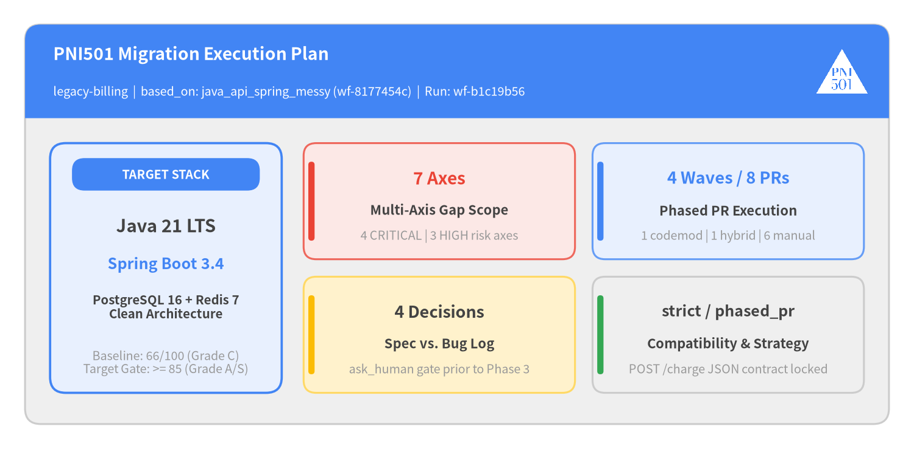
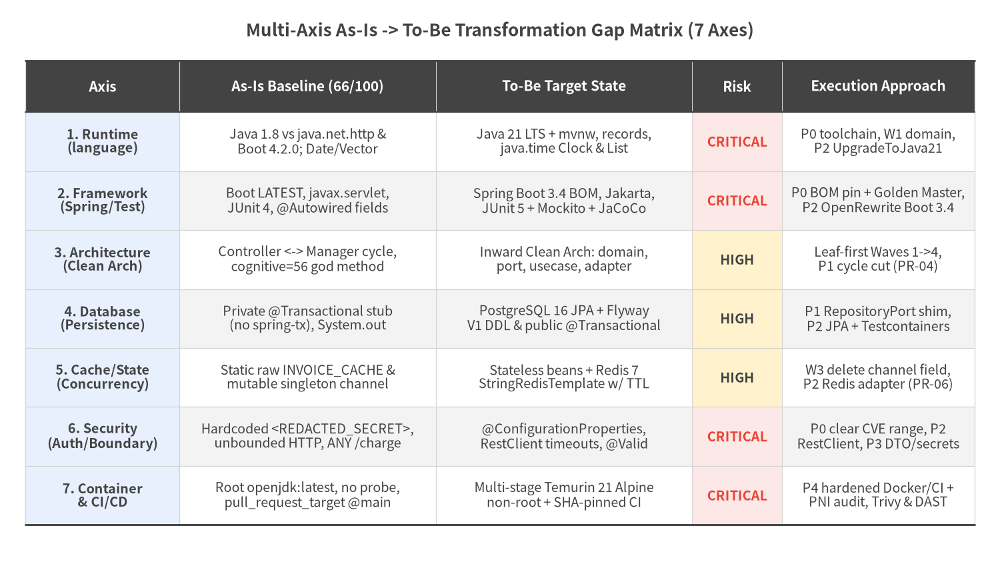
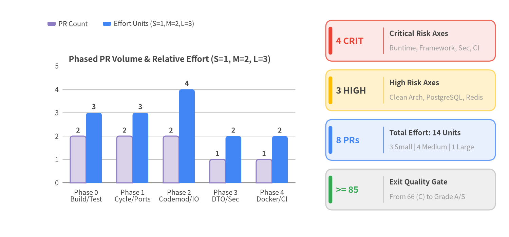
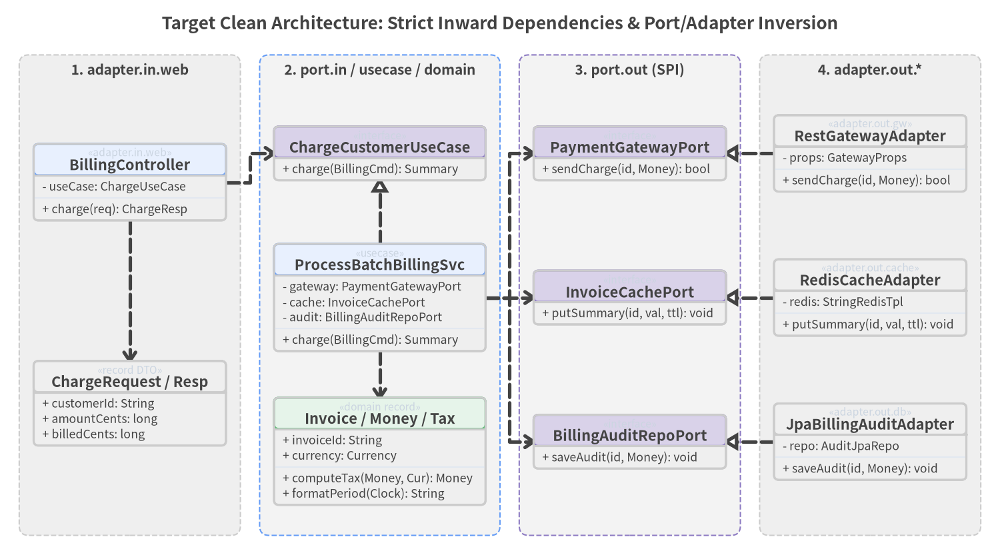
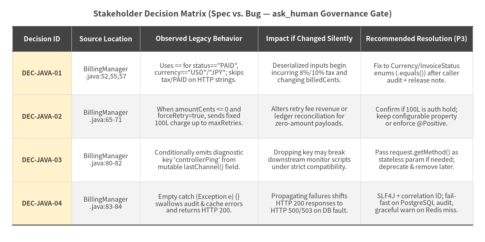
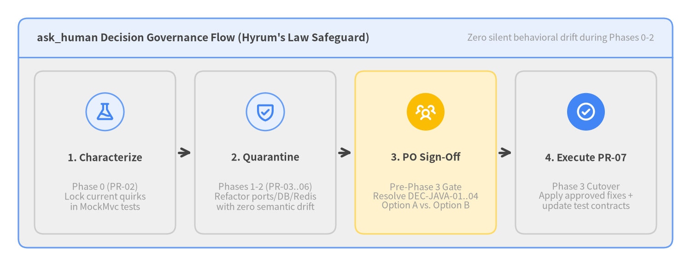
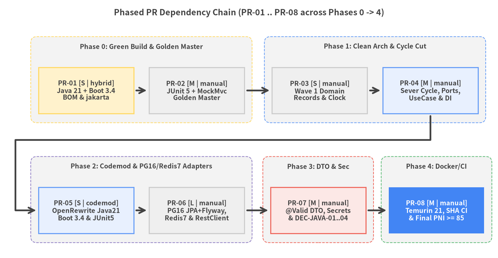
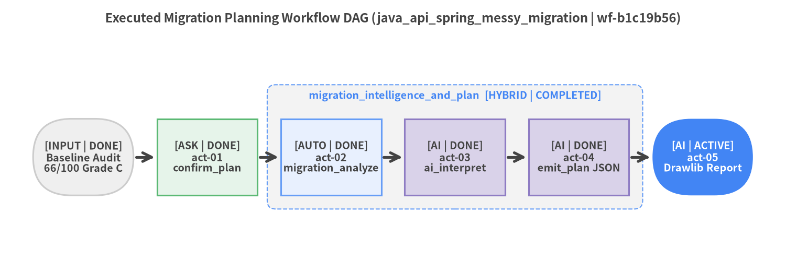

PNI Migration Execution Plan: legacy-billing
Target Repository: examples/java/api_spring_messy (java_api_spring_messy_migration)
Migration Path: Java 1.8 / Unpinned Spring Boot / Cyclic Monolith -> Java 21 LTS + Spring Boot 3.4 + PostgreSQL 16 + Redis 7 + Clean Architecture

Migration Plan Identification & Provenance
| Attribute | Value |
|---|---|
| Project Name | legacy-billing (com.example:legacy-billing:0.0.1-SNAPSHOT) |
| Target Root | examples/java/api_spring_messy (java, 6 production files / 1 test file) |
| Workflow ID & Run ID | java_api_spring_messy_migration (wf-b1c19b56, category=migration, scope=repo) |
| Based-On Baseline Audit | java_api_spring_messy (wf-8177454c — 66 / 100, Grade C, 0/16 rules passed, Docker Maven build broken) |
| Generated At (UTC) | 2026-11-22T11:57:23.102522+00:00 (main@d1e02277 (dirty)) |
| Target Architecture | Clean Architecture (domain / port / usecase / adapter.in.web / adapter.out.{gateway,persistence,cache}) |
| Target Runtime & Stack | Java 21 LTS, Spring Boot 3.4.x BOM (Jakarta EE 10), PostgreSQL 16 (JPA + Flyway), Redis 7 (TTL), Spring RestClient, JUnit 5 + Mockito + JaCoCo |
| Transformation Mode | architectural_restructure |
| Execution Strategy | phased_pr across 5 Gated Phases (Phase 0..Phase 4), 4 Topological Waves, and 8 PRs (PR-01..PR-08) |
| API Compatibility & Bug Policy | strict external JSON compatibility on POST /charge (customerId, amountCents, billedCents); ask_human policy via 4-item Stakeholder Decision Log |
| Automated Codemod Engine | OpenRewrite (UpgradeToJava21, UpgradeSpringBoot_3_4, JUnit4to5Migration) |
| Acceptance Target | Clean Maven + non-root Temurin 21 Docker build, 0 CRITICAL/HIGH SCA/IaC/DAST findings, PNI Score >= 85 (Grade A/S) |
Governance & Redaction Notice: This Migration Execution Plan is chained directly from baseline audit
wf-8177454c(java_api_spring_messy) under PNI501 Workflow v2. All detected credential literals (such asGatewayClient.GATEWAY_SECRET) are masked as<REDACTED_SECRET>, and all behavioral quirks are quarantined behind Phase 0 Golden Master characterization tests until explicit stakeholder sign-off in Phase 3.
1. Migration Strategy Summary & Multi-Axis Gap Matrix
This phased PR execution plan modernizes legacy-billing (Baseline Audit wf-8177454c: Grade C, 66/100) from a broken Java 1.8 / unpinned Spring Boot / cyclic monolith into a deterministic Java 21 LTS + Spring Boot 3.4.x + PostgreSQL 16 (JPA + Flyway) + Redis 7 service organized under Clean Architecture (domain / port / usecase / adapter).

Source Code
from drawlib.canvas import save, setup
from drawlib.preset_colors import CssColors
from drawlib.smartarts import Table
from drawlib.styles import Colors, Styles
from drawlib.text import text
setup(width=156, height=88, dpi=150)
text(
(78.0, 83.2),
"Multi-Axis As-Is -> To-Be Transformation Gap Matrix (7 Axes)",
style=Styles.DarkBold.patch(text_size=12.5),
)
table = Table(
cell_style=Styles.Neutral,
text_style=Styles.Dark.patch(text_size=9.5),
header_cell_style=Styles.PrimaryFlat,
header_text_style=Styles.WhiteBold.patch(text_size=10.0),
border_style=Styles.MutedThin,
)
table.set_style_cell_evenodd(
even_color=Colors.Light,
even_text_style=Styles.Dark.patch(text_size=9.5),
odd_color=Colors.White,
odd_text_style=Styles.Dark.patch(text_size=9.5),
)
table.set_style_cell_header(
background_color=Colors.Dark,
text_style=Styles.WhiteBold.patch(text_size=10.0),
)
table.set_style_cell(
background_color=Styles.PrimaryNeutral.shape_fill_color,
text_style=Styles.DarkBold.patch(text_size=9.5),
rows=[1, 2, 3, 4, 5, 6, 7],
columns=[0],
)
table.set_style_cell(
background_color=Styles.DangerNeutral.shape_fill_color,
text_style=Styles.DangerBold.patch(text_size=9.5),
rows=[1, 2, 6, 7],
columns=[3],
)
table.set_style_cell(
background_color=Styles.WarningNeutral.shape_fill_color,
text_style=Styles.WarningBold.patch(text_size=9.5),
rows=[3, 4, 5],
columns=[3],
)
table.set_style_border(
top=Styles.DarkBold.patch(line_width=1.4),
top2=Styles.DarkBold.patch(line_width=1.0),
bottom=Styles.DarkBold.patch(line_width=1.4),
between_rows=Styles.MutedThin.patch(line_color=CssColors.LightGray, line_width=0.6),
between_columns=Styles.MutedThin.patch(line_color=CssColors.LightGray, line_width=0.5),
)
data = [
["Axis", "As-Is Baseline (66/100)", "To-Be Target State", "Risk", "Execution Approach"],
[
"1. Runtime\n(language)",
"Java 1.8 vs java.net.http &\nBoot 4.2.0; Date/Vector",
"Java 21 LTS + mvnw, records,\njava.time Clock & List",
"CRITICAL",
"P0 toolchain, W1 domain,\nP2 UpgradeToJava21",
],
[
"2. Framework\n(Spring/Test)",
"Boot LATEST, javax.servlet,\nJUnit 4, @Autowired fields",
"Spring Boot 3.4 BOM, Jakarta,\nJUnit 5 + Mockito + JaCoCo",
"CRITICAL",
"P0 BOM pin + Golden Master,\nP2 OpenRewrite Boot 3.4",
],
[
"3. Architecture\n(Clean Arch)",
"Controller <-> Manager cycle,\ncognitive=56 god method",
"Inward Clean Arch: domain,\nport, usecase, adapter",
"HIGH",
"Leaf-first Waves 1->4,\nP1 cycle cut (PR-04)",
],
[
"4. Database\n(Persistence)",
"Private @Transactional stub\n(no spring-tx), System.out",
"PostgreSQL 16 JPA + Flyway\nV1 DDL & public @Transactional",
"HIGH",
"P1 RepositoryPort shim,\nP2 JPA + Testcontainers",
],
[
"5. Cache/State\n(Concurrency)",
"Static raw INVOICE_CACHE &\nmutable singleton channel",
"Stateless beans + Redis 7\nStringRedisTemplate w/ TTL",
"HIGH",
"W3 delete channel field,\nP2 Redis adapter (PR-06)",
],
[
"6. Security\n(Auth/Boundary)",
"Hardcoded <REDACTED_SECRET>,\nunbounded HTTP, ANY /charge",
"@ConfigurationProperties,\nRestClient timeouts, @Valid",
"CRITICAL",
"P0 clear CVE range, P2\nRestClient, P3 DTO/secrets",
],
[
"7. Container\n& CI/CD",
"Root openjdk:latest, no probe,\npull_request_target @main",
"Multi-stage Temurin 21 Alpine\nnon-root + SHA-pinned CI",
"CRITICAL",
"P4 hardened Docker/CI +\nPNI audit, Trivy & DAST",
],
]
table.draw_flexible(
xy=(4.0, 78.5),
column_widths=[24.0, 40.0, 40.0, 14.0, 30.0],
row_heights=[8.0, 9.2, 9.2, 9.2, 9.2, 9.2, 9.2, 9.2],
data=data,
align="top_left",
)
save()
Executive Modernization Rationale
Baseline audit wf-8177454c (java_api_spring_messy) established that legacy-billing cannot currently compile inside a clean Maven/Docker harness because pom.xml pins Java 1.8 while GatewayClient.java imports Java 11's java.net.http API and spring-boot-starter-web:LATEST resolves Spring Boot 4.2.0 bytecode (class file version 61.0). Beyond the broken build, BillingController and BillingManager form a bidirectional runtime dependency cycle (circularController), share unsynchronized mutable singleton/static state (channel, INVOICE_CACHE), swallow exceptions silently, and expose an unvalidated catch-all @RequestMapping("/charge") endpoint.
To eliminate regressions under Hyrum's Law, the migration follows a strict 5-Phase Gated Phased-PR strategy (phased_pr) instead of a big-bang rewrite:
- Phase 0 (
PR-01,PR-02): Restore a deterministic green build on Java 21 LTS + Spring Boot 3.4.x BOM and lock the externalPOST /chargeJSON contract (customerId,amountCents,billedCents) with JUnit 5 + MockMvc Golden Master characterization tests. - Phase 1 (
PR-03,PR-04): Execute leaf-first Domain extraction (Wave 1) and sever theBillingManager -> BillingControllerback-edge (Wave 3) behind explicit inbound/outbound Ports and temporary in-memory shims with zero behavioral drift. - Phase 2 (
PR-05,PR-06): Isolate mechanical OpenRewrite codemod diffs inPR-05, then swap in production PostgreSQL 16 (JPA + Flyway), Redis 7 (TTL), and timeout-bounded SpringRestClientadapters verified via Testcontainers and WireMock inPR-06. - Phase 3 (
PR-07): Enforce@PostMapping("/charge")with@ValidJava 21 record DTOs, delete hardcodedGATEWAY_SECRET(<REDACTED_SECRET>), enforce SLF4J structured logging, and apply stakeholder-approved resolutions forDEC-JAVA-01..DEC-JAVA-04. - Phase 4 (
PR-08): Replace the broken rootopenjdk:latestDockerfile and privilegedpull_request_targetCI workflow with a multi-stage non-rooteclipse-temurin:21-jre-alpineimage, Actuator/actuator/healthprobe, and SHA-pinned GitHub Actions, concluding with a full PNI v2 verification audit, Trivy scan, and live DAST run.

Source Code
from drawlib.canvas import save, setup
from drawlib.charts.bar import BarChart
from drawlib.smartarts import KpiCards
from drawlib.styles import Styles
setup(width=150, height=70, dpi=150)
# Left: Grouped BarChart comparing PR Count vs Relative Effort Units per Phase
chart = BarChart(
axis_line_style=Styles.Dark.patch(line_width=1.0),
categories=["Phase 0\nBuild/Test", "Phase 1\nCycle/Ports", "Phase 2\nCodemod/IO", "Phase 3\nDTO/Sec", "Phase 4\nDocker/CI"],
width=80.0,
height=44.0,
bar_mode="group",
bar_width_ratio=0.68,
bar_r=0.8,
title="Phased PR Volume & Relative Effort (S=1, M=2, L=3)",
title_style=Styles.DarkBold.patch(text_size=11.5),
axis_text_style=Styles.Dark.patch(text_size=9.5),
grid_style=Styles.MutedThin,
value_text_style=Styles.DarkBold.patch(text_size=9.5),
value_format="{:.0f}",
)
chart.add_series("PR Count", [2.0, 2.0, 2.0, 1.0, 1.0], style=Styles.SecondaryNeutral)
chart.add_series("Effort Units (S=1,M=2,L=3)", [3.0, 3.0, 4.0, 2.0, 2.0], style=Styles.PrimaryFlat)
chart.configure_y_axis(min_value=0.0, max_value=5.0, tick_step=1.0, label="Count / Units")
chart.draw(xy=(10.0, 11.0))
chart.draw_legend(xy=(14.0, 63.0), text_style=Styles.Dark.patch(text_size=9.5), orientation="horizontal")
# Right: Risk & Scope Summary KPI Stack
kpis = KpiCards(
style=Styles.Neutral.patch(shape_r=2.0),
metric_style=Styles.DarkBold.patch(text_size=13.0),
text_style=Styles.DarkBold.patch(text_size=10.0),
description_style=Styles.Muted.patch(text_size=9.5),
accent_style=Styles.PrimaryFlat,
accent_position="left_pill",
metric_layout="left_column",
metric_width_ratio=0.34,
spacing=2.6,
)
kpis.add(
"4 CRIT",
"Critical Risk Axes",
"Runtime, Framework, Sec, CI",
style=Styles.DangerNeutral.patch(shape_r=2.0),
metric_style=Styles.DangerBold.patch(text_size=12.5),
accent_style=Styles.DangerFlat,
)
kpis.add(
"3 HIGH",
"High Risk Axes",
"Clean Arch, PostgreSQL, Redis",
style=Styles.WarningNeutral.patch(shape_r=2.0),
metric_style=Styles.WarningBold.patch(text_size=12.5),
accent_style=Styles.WarningFlat,
)
kpis.add(
"8 PRs",
"Total Effort: 14 Units",
"3 Small | 4 Medium | 1 Large",
style=Styles.PrimaryNeutral.patch(shape_r=2.0),
metric_style=Styles.PrimaryBold.patch(text_size=12.5),
accent_style=Styles.PrimaryFlat,
)
kpis.add(
">= 85",
"Exit Quality Gate",
"From 66 (C) to Grade A/S",
style=Styles.Neutral.patch(shape_r=2.0),
metric_style=Styles.SuccessBold.patch(text_size=12.5),
accent_style=Styles.SuccessFlat,
)
kpis.draw(xy=(96.0, 8.0), width=50.0, height=56.0, columns=1)
save()
Confirmed Assumptions vs. Explicit Non-Goals
All scope boundaries were locked prior to PR decomposition so implementation teams do not drift into unapproved platform rewrites.
| Scope Type | Confirmed Decision / Guardrail |
|---|---|
| Confirmed Assumption | Target runtime and framework are pinned to Java 21 LTS + Spring Boot 3.4.x BOM (Jakarta EE 10, JUnit 5 Jupiter, Mockito, JaCoCo). |
| Confirmed Assumption | Persistence is externalized to PostgreSQL 16 via Spring Data JPA + Flyway versioned DDL migrations (V1__create_billing_audit.sql). |
| Confirmed Assumption | Process-local BillingManager.INVOICE_CACHE is externalized to Redis 7 (StringRedisTemplate / Spring Data Redis) with explicit key TTL. |
| Confirmed Assumption | Strict external HTTP JSON contract compatibility is preserved on POST /charge (customerId, amountCents, billedCents). |
| Confirmed Assumption | Ambiguous legacy quirks (controllerPing, String == comparisons, fixed 100L retry charge, silent catch) are quarantined in the Stakeholder Decision Log under ask_human prior to Phase 3. |
| Explicit Non-Goal | No microservice decomposition or multi-artifact repository split — retain a single deployable Maven artifact (com.example:legacy-billing). |
| Explicit Non-Goal | No Kafka or RabbitMQ event bus introduction in this migration wave. |
| Explicit Non-Goal | No breaking URL path changes or /v2/charge API versioning on /charge. |
Detailed 7-Axis Modernization Matrix
Axis (category) |
Risk | Affected Files | As-Is Baseline | To-Be Target State |
|---|---|---|---|---|
language_runtime |
CRITICAL | pom.xml, GatewayClient.java, LegacyDateHelper.java |
pom.xml targets Java 1.8 (colliding with Java 11 java.net.http and Boot 4.2.0 bytecode 61.0); LegacyDateHelper uses non-thread-safe SimpleDateFormat, Date, and Vector. |
Java 21 LTS toolchain + Maven Wrapper (mvnw), immutable Java 21 record types, java.time.Instant / DateTimeFormatter / Clock, and List/ArrayList. |
framework |
CRITICAL | pom.xml, BillingApp.java, BillingController.java, BillingManager.java, BillingManagerTest.java |
spring-boot-starter-web:LATEST without BOM, javax.servlet:4.0.1, JUnit 4.13.2 assertion-free test, @Autowired field injection, catch-all @RequestMapping, missing spring-tx. |
Pinned Spring Boot 3.4.x BOM, jakarta.servlet / jakarta.validation, Spring RestClient, constructor DI, @PostMapping("/charge"), JUnit 5 Jupiter + Mockito + JaCoCo. |
architecture_pattern |
HIGH | InvoiceRecord.java, BillingController.java, BillingManager.java, GatewayClient.java |
Runtime circular dependency BillingController <-> BillingManager (circularController), cognitive=56 god method (8 params), raw Map/List payloads. |
Strict inward-only Clean Architecture: framework-free domain records & TaxPolicy, inbound/outbound port interfaces, pure usecase orchestrators, isolated adapter packages. |
database_persistence |
HIGH | pom.xml, BillingManager.java |
BillingManager.saveAuditTrail() uses private @Transactional (bypassed by Spring AOP self-invocation and missing spring-tx) and logs to System.out. |
Outbound BillingAuditRepositoryPort implemented by JpaBillingAuditAdapter backed by PostgreSQL 16 + Flyway V1__create_billing_audit.sql with public @Transactional. |
cache_state |
HIGH | BillingController.java, BillingManager.java |
Unsynchronized static raw Map (BillingManager.INVOICE_CACHE) and mutable singleton field (BillingController.channel) cause cross-request data races. |
Stateless controllers and use cases with InvoiceCachePort implemented by RedisInvoiceCacheAdapter (Redis 7 StringRedisTemplate with explicit TTL). |
auth_security |
CRITICAL | GatewayClient.java, BillingController.java, pom.xml |
Hardcoded GATEWAY_SECRET (<REDACTED_SECRET>) at GatewayClient.java:13, untyped System.getenv, unbounded HttpClient.newHttpClient(), unauthenticated ANY /charge, unpinned CVE-2022-22965 range. |
@ConfigurationProperties secret & endpoint binding, timeout-bounded RestClient, @PostMapping("/charge") with @Valid ChargeRequest, auth filter, SLF4J structured logging. |
container_cicd |
CRITICAL | Dockerfile, .github/workflows/build.yml |
FROM openjdk:latest (removed on Docker Hub, root user, no .dockerignore, no HEALTHCHECK); CI uses pull_request_target + actions/checkout@main with no permissions. |
Multi-stage eclipse-temurin:21-jdk / 21-jre-alpine non-root image + .dockerignore + Actuator HEALTHCHECK; pull_request workflow with contents: read and commit-SHA pinning. |
2. Target Architecture, Refactoring Waves & Data Contracts
To eliminate the BillingController <-> BillingManager cycle and isolate infrastructure concerns from billing rules, legacy-billing transitions to Clean Architecture (Hexagonal / Ports & Adapters) on Java 21 LTS + Spring Boot 3.4, executed leaf-first across four topological waves.

Source Code
from drawlib.canvas import save, setup
from drawlib.diagrams.class_diagram import ClassDiagram, ClassNode
from drawlib.fonts import FontRoboto, FontSourceCode
from drawlib.shapes import rectangle
from drawlib.styles import Colors, Styles
from drawlib.text import text
setup(width=208, height=116, dpi=150)
# Top canvas title well above the 4 Clean Architecture layer bands
text(
(104.0, 111.0),
"Target Clean Architecture: Strict Inward Dependencies & Port/Adapter Inversion",
style=Styles.DarkBold.patch(text_size=12.5),
)
# Subtle layer backdrop bands (y=4..105, band titles at y=101.2, class boxes below y=94)
bands = [
(27.0, 54.5, 46.0, 100.0, "1. adapter.in.web", Styles.Neutral),
(79.0, 54.5, 50.0, 100.0, "2. port.in / usecase / domain", Styles.PrimaryNeutral.patch(shape_fill_color=Colors.Light)),
(131.0, 54.5, 46.0, 100.0, "3. port.out (SPI)", Styles.SecondaryNeutral.patch(shape_fill_color=Colors.Light)),
(181.0, 54.5, 46.0, 100.0, "4. adapter.out.*", Styles.Neutral),
]
for cx, cy, bw, bh, title, st in bands:
rectangle(
(cx, cy),
width=bw,
height=bh,
style=st.patch(shape_r=2.0, shape_line_style="dashed", shape_line_width=1.0),
)
text((cx, cy + bh / 2.0 - 3.2), title, style=Styles.DarkBold.patch(text_size=10.0))
hdr_primary = Styles.PrimaryNeutral.patch(text_font=FontRoboto.ROBOTO_BOLD, text_color=Colors.Dark, text_size=9.5)
hdr_secondary = Styles.SecondaryNeutral.patch(text_font=FontRoboto.ROBOTO_BOLD, text_color=Colors.Dark, text_size=9.5)
hdr_success = Styles.SuccessNeutral.patch(text_font=FontRoboto.ROBOTO_BOLD, text_color=Colors.Dark, text_size=9.5)
hdr_neutral = Styles.Neutral.patch(text_font=FontRoboto.ROBOTO_BOLD, text_color=Colors.Dark, text_size=9.5)
cd = ClassDiagram(
node_style=Styles.Neutral.patch(text_font=FontSourceCode.ROBOTO_MONO, text_color=Colors.Dark, text_size=9.5),
header_style=hdr_primary,
edge_style=Styles.DarkBold,
edge_text_style=Styles.Dark.patch(text_size=9.5),
)
# Column 1: Inbound Web Adapter (com.example.billing.adapter.in.web)
ctrl = cd.add(
ClassNode("BillingController", stereotype="adapter.in.web", width=40.0, header_style=hdr_primary)
.add_attribute("useCase", "ChargeUseCase", visibility="-")
.add_method("charge", "req", "ChargeResp"),
xy=(23.0, 74.0),
)
dtos = cd.add(
ClassNode("ChargeRequest / Resp", stereotype="record DTO", width=40.0, header_style=hdr_neutral)
.add_attribute("customerId", "String", visibility="+")
.add_attribute("amountCents", "long", visibility="+")
.add_attribute("billedCents", "long", visibility="+"),
xy=(23.0, 28.0),
)
# Column 2: Inbound Port, UseCase & Pure Domain Core
in_port = cd.add(
ClassNode("ChargeCustomerUseCase", stereotype="interface", width=44.0, header_style=hdr_secondary)
.add_method("charge", "BillingCmd", "Summary"),
xy=(75.0, 80.0),
)
usecase = cd.add(
ClassNode("ProcessBatchBillingSvc", stereotype="usecase", width=44.0, header_style=hdr_primary)
.add_attribute("gateway", "PaymentGatewayPort", visibility="-")
.add_attribute("cache", "InvoiceCachePort", visibility="-")
.add_attribute("audit", "BillingAuditRepoPort", visibility="-")
.add_method("charge", "BillingCmd", "Summary"),
xy=(75.0, 50.0),
)
domain = cd.add(
ClassNode("Invoice / Money / Tax", stereotype="domain record", width=44.0, header_style=hdr_success)
.add_attribute("invoiceId", "String", visibility="+")
.add_attribute("currency", "Currency", visibility="+")
.add_method("computeTax", "Money, Cur", "Money")
.add_method("formatPeriod", "Clock", "String"),
xy=(75.0, 18.0),
)
# Column 3: Outbound SPI Ports (com.example.billing.port)
gw_port = cd.add(
ClassNode("PaymentGatewayPort", stereotype="interface", width=40.0, header_style=hdr_secondary)
.add_method("sendCharge", "id, Money", "bool"),
xy=(127.0, 80.0),
)
cache_port = cd.add(
ClassNode("InvoiceCachePort", stereotype="interface", width=40.0, header_style=hdr_secondary)
.add_method("putSummary", "id, val, ttl", "void"),
xy=(127.0, 50.0),
)
audit_port = cd.add(
ClassNode("BillingAuditRepoPort", stereotype="interface", width=40.0, header_style=hdr_secondary)
.add_method("saveAudit", "id, Money", "void"),
xy=(127.0, 20.0),
)
# Column 4: Outbound Infrastructure Adapters (com.example.billing.adapter.out.*)
gw_adapter = cd.add(
ClassNode("RestGatewayAdapter", stereotype="adapter.out.gw", width=40.0, header_style=hdr_neutral)
.add_attribute("props", "GatewayProps", visibility="-")
.add_method("sendCharge", "id, Money", "bool"),
xy=(177.0, 80.0),
)
cache_adapter = cd.add(
ClassNode("RedisCacheAdapter", stereotype="adapter.out.cache", width=40.0, header_style=hdr_neutral)
.add_attribute("redis", "StringRedisTpl", visibility="-")
.add_method("putSummary", "id, val, ttl", "void"),
xy=(177.0, 50.0),
)
audit_adapter = cd.add(
ClassNode("JpaBillingAuditAdapter", stereotype="adapter.out.db", width=40.0, header_style=hdr_neutral)
.add_attribute("repo", "AuditJpaRepo", visibility="-")
.add_method("saveAudit", "id, Money", "void"),
xy=(177.0, 20.0),
)
# Inward dependencies & Dependency Inversion realizations (zero crossings)
cd.connect(ctrl, in_port, "dependency", start_side="right", end_side="left")
cd.connect(ctrl, dtos, "dependency", start_side="bottom", end_side="top")
cd.connect(usecase, in_port, "realization", start_side="top", end_side="bottom")
cd.connect(usecase, domain, "dependency", start_side="bottom", end_side="top")
cd.connect(usecase, gw_port, "dependency", start_side="right", end_side="left")
cd.connect(usecase, cache_port, "dependency", start_side="right", end_side="left")
cd.connect(usecase, audit_port, "dependency", start_side="right", end_side="left")
cd.connect(gw_adapter, gw_port, "realization", start_side="left", end_side="right")
cd.connect(cache_adapter, cache_port, "realization", start_side="left", end_side="right")
cd.connect(audit_adapter, audit_port, "realization", start_side="left", end_side="right")
cd.draw(xy=(4.0, 4.0))
save()
Architectural Dependency Rules & Concentric Ring Boundaries
The target package layout enforces strict inward-only dependencies verifiable via ArchUnit or static import checks:
| Target Layer | Package | Responsibility | Allowed Dependencies | Forbidden Imports |
|---|---|---|---|---|
| Domain Layer | com.example.billing.domain |
Pure Java 21 immutable record models (Invoice, Money, BillingSummary), Currency/InvoiceStatus enums, deterministic TaxPolicy, and BillingPeriodFormatter. |
(None — zero outward dependencies) | org.springframework.*, jakarta.persistence.*, jakarta.servlet.*, java.net.http.* |
| Port Layer | com.example.billing.port |
Inbound use-case contracts (ChargeCustomerUseCase, ProcessBatchBillingUseCase) and outbound SPI contracts (PaymentGatewayPort, InvoiceCachePort, BillingAuditRepositoryPort). |
Domain Layer |
org.springframework.web.*, jakarta.persistence.* |
| UseCase Layer | com.example.billing.usecase |
Pure billing orchestration (ProcessBatchBillingService) coordinating tax rules, bounded gateway retries, cache updates, and audit persistence without upward Controller references. |
Domain Layer, Port Layer |
com.example.billing.adapter.*, org.springframework.web.* |
| Inbound Web Adapter | com.example.billing.adapter.in.web |
Stateless BillingController (@PostMapping("/charge")), @Valid ChargeRequest/ChargeResponse DTOs preserving strict external JSON keys, and exception mapping. |
Port Layer, Domain Layer |
com.example.billing.adapter.out.* |
| Outbound Infrastructure Adapters | com.example.billing.adapter.out |
RestClientPaymentGatewayAdapter (timeouts + @ConfigurationProperties), JpaBillingAuditAdapter (PostgreSQL 16 + Flyway + public @Transactional), RedisInvoiceCacheAdapter (Redis 7 TTL). |
Port Layer, Domain Layer |
com.example.billing.adapter.in.* |
Topological Refactoring Waves (1..4) & Cycle-Cut Mechanism
Deterministic import-DAG analysis partitions the six production Java source files into four leaf-first waves. Wave 1 leaves have zero internal dependencies and are typed first; Wave 3 isolates the strongly connected component (BillingController <-> BillingManager) so the upward back-edge BillingManager.circularController -> BillingController is severed cleanly before composition-root wiring in Wave 4.

Source Code
from drawlib.canvas import save, setup
from drawlib.icons import phosphor
from drawlib.lines import line
from drawlib.shapes import rectangle
from drawlib.smartarts import Panel, Roadmap
from drawlib.styles import Colors, Styles
from drawlib.text import text
setup(width=156, height=82, dpi=150)
text(
(78.0, 77.5),
"Topological Refactoring Waves (1..4) & BillingManager -> BillingController Cycle Cut",
style=Styles.DarkBold.patch(text_size=12.0),
)
# Left: Vertical Roadmap of Waves 1..4
rm = Roadmap(
style=Styles.Neutral.patch(shape_r=2.0),
text_style=Styles.DarkBold.patch(text_size=10.5),
description_style=Styles.Muted.patch(text_size=9.5),
spine_style=Styles.DarkBold,
badge_style=Styles.PrimaryNeutral,
badge_text_style=Styles.PrimaryBold.patch(text_size=9.8),
icon_style=Styles.PrimaryBold,
direction="vertical",
curve_bend=0.0,
card_shape="rounded_rect",
spacing=2.6,
)
rm.add(
"Wave 1: Leaf Models & Time Utilities",
"InvoiceRecord.java, LegacyDateHelper.java -> domain records & Clock",
badge_text="W1",
icon=phosphor.code,
)
rm.add(
"Wave 2: Outbound Gateway Client",
"GatewayClient.java -> PaymentGatewayPort + RestClient adapter",
badge_text="W2",
icon=phosphor.arrows_clockwise,
)
rm.add(
"Wave 3: Strongly Connected Component (Cycle Cut)",
"BillingController <-> BillingManager -> sever circularController",
badge_text="W3",
icon=phosphor.warning,
style=Styles.DangerNeutral.patch(shape_r=2.0),
badge_style=Styles.DangerFlat,
badge_text_style=Styles.WhiteBold.patch(text_size=9.8),
icon_style=Styles.DangerBold,
)
rm.add(
"Wave 4: Composition Root & Entrypoint",
"BillingApp.java -> @ConfigurationPropertiesScan + Actuator probes",
badge_text="W4",
icon=phosphor.rocket_launch,
badge_style=Styles.PrimaryFlat,
badge_text_style=Styles.WhiteBold.patch(text_size=9.8),
)
rm.draw(xy=(4.0, 5.0), width=92.0, height=68.0)
# Right: Cycle-Cut Before/After Panel
cut_panel = Panel(
"Wave 3 Cycle Cut (PR-04)",
style=Styles.Neutral.patch(shape_r=2.0),
header_style=Styles.DarkBold.patch(shape_fill_color=Colors.Dark),
text_style=Styles.WhiteBold.patch(text_size=10.5),
header_variant="filled",
header_height=8.5,
header_align="center",
)
cut_panel.draw((100.0, 5.0), width=52.0, height=68.0)
# As-Is Cyclic Box (Top half inside panel)
text((126.0, 61.2), "As-Is: Bidirectional Runtime Cycle", style=Styles.DangerBold.patch(text_size=9.8))
rectangle(
(112.5, 51.0),
width=21.0,
height=11.0,
style=Styles.DangerNeutral.patch(shape_r=1.8),
text="Billing\nController",
text_style=Styles.DarkBold.patch(text_size=9.5),
)
rectangle(
(139.5, 51.0),
width=21.0,
height=11.0,
style=Styles.DangerNeutral.patch(shape_r=1.8),
text="Billing\nManager",
text_style=Styles.DarkBold.patch(text_size=9.5),
)
line((123.2, 53.5), (128.8, 53.5), arrow_head="->", style=Styles.DarkBold)
line((128.8, 48.2), (123.2, 48.2), arrow_head="->", style=Styles.DangerDashedBold)
text((126.0, 42.2), "X Cut: @Autowired circularController", style=Styles.DangerBold.patch(text_size=9.5))
# Transition arrow down
line((126.0, 38.8), (126.0, 32.8), arrow_head="->", style=Styles.PrimaryBold)
# To-Be Acyclic Box (Bottom half inside panel)
text((126.0, 29.5), "To-Be: Acyclic Port Inversion", style=Styles.SuccessBold.patch(text_size=9.8))
rectangle(
(112.5, 19.0),
width=21.0,
height=11.0,
style=Styles.PrimaryNeutral.patch(shape_r=1.8),
text="Billing\nController",
text_style=Styles.DarkBold.patch(text_size=9.5),
)
rectangle(
(139.5, 19.0),
width=21.0,
height=11.0,
style=Styles.SuccessNeutral.patch(shape_r=1.8),
text="UseCase\nService",
text_style=Styles.DarkBold.patch(text_size=9.5),
)
line((123.2, 19.0), (128.8, 19.0), arrow_head="->", style=Styles.SuccessBold)
text((126.0, 9.8), "Pass scalar requestMethod via DTO\n(0 shared state, 0 cycles)", style=Styles.Dark.patch(text_size=9.5))
save()
As-Is -> To-Be Component & Port/Adapter Mapping
| Legacy Source File & Symbol | Wave | Target Layer | To-Be Component & Role | Key Refactoring Action |
|---|---|---|---|---|
model/InvoiceRecord.java (InvoiceRecord) |
Wave 1 | Domain Layer | com.example.billing.domain.Invoice / Money (Pure Java 21 Record) |
Convert class to immutable Java 21 record with non-negative invariant validation. |
util/LegacyDateHelper.java (LegacyDateHelper) |
Wave 1 | Domain Layer | com.example.billing.domain.BillingPeriodFormatter (Domain Time Policy) |
Replace SimpleDateFormat, Date, and Vector with thread-safe DateTimeFormatter, Clock, and List<String>. |
client/GatewayClient.java (sendCharge) |
Wave 2 | Outbound Adapters | adapter.out.gateway.RestClientPaymentGatewayAdapter (implements PaymentGatewayPort) |
Externalize LEGACY_PAYMENT_URL and GATEWAY_SECRET (<REDACTED_SECRET>) to @ConfigurationProperties; enforce connect/read timeouts via RestClient; log via SLF4J. |
service/BillingManager.java (processBatchBilling) |
Wave 3 | UseCase Layer | usecase.ProcessBatchBillingService (implements ProcessBatchBillingUseCase) |
Sever @Autowired circularController; decompose cognitive=56, 8-param god method into BillingCommand + TaxPolicy; delegate to 3 outbound ports. |
service/BillingManager.java (INVOICE_CACHE) |
Wave 3 | Outbound Adapters | adapter.out.cache.RedisInvoiceCacheAdapter (implements InvoiceCachePort) |
Replace unsynchronized static raw HashMap with Redis 7 StringRedisTemplate and explicit TTL. |
service/BillingManager.java (saveAuditTrail) |
Wave 3 | Outbound Adapters | adapter.out.persistence.JpaBillingAuditAdapter (implements BillingAuditRepositoryPort) |
Replace broken private @Transactional System.out stub with PostgreSQL 16 JPA repository, Flyway DDL, and public @Transactional. |
controller/BillingController.java (chargeCustomer) |
Wave 3/4 | Inbound Web Adapter | adapter.in.web.BillingController (Inbound HTTP Adapter) |
Remove mutable channel field; restrict to @PostMapping("/charge") with @Valid ChargeRequest; preserve strict JSON keys; wire ChargeCustomerUseCase via constructor DI. |
BillingApp.java (BillingApp) |
Wave 4 | Composition Root | com.example.billing.BillingApp + BillingConfiguration |
Enable @ConfigurationPropertiesScan, wire adapter beans, and expose Spring Boot Actuator health probes. |
Implicit HTTP & Environment Contract -> Typed DTO Mapping
Under api_compatibility=strict, every implicit JSON key and environment variable discovered by static AST analysis is mapped explicitly onto typed Java 21 records and @ConfigurationProperties.

Source Code
from drawlib.canvas import save, setup
from drawlib.preset_colors import CssColors
from drawlib.smartarts import Table
from drawlib.styles import Colors, Styles
from drawlib.text import text
setup(width=156, height=74, dpi=150)
text(
(78.0, 69.5),
"Strict External Contract Preservation: Implicit Keys -> Typed Java 21 DTOs & Config",
style=Styles.DarkBold.patch(text_size=12.0),
)
table = Table(
cell_style=Styles.Neutral,
text_style=Styles.Dark.patch(text_size=9.5),
header_cell_style=Styles.PrimaryFlat,
header_text_style=Styles.WhiteBold.patch(text_size=10.0),
border_style=Styles.MutedThin,
)
table.set_style_cell_evenodd(
even_color=Colors.Light,
even_text_style=Styles.Dark.patch(text_size=9.5),
odd_color=Colors.White,
odd_text_style=Styles.Dark.patch(text_size=9.5),
)
table.set_style_cell_header(
background_color=Colors.Dark,
text_style=Styles.WhiteBold.patch(text_size=10.0),
)
table.set_style_cell(
background_color=Styles.PrimaryNeutral.shape_fill_color,
text_style=Styles.PrimaryBold.patch(text_size=9.5),
rows=[1, 2, 3, 4],
columns=[0],
)
table.set_style_cell(
background_color=Styles.WarningNeutral.shape_fill_color,
text_style=Styles.WarningBold.patch(text_size=9.5),
rows=[5],
columns=[0],
)
table.set_style_cell(
background_color=Styles.SecondaryNeutral.shape_fill_color,
text_style=Styles.DarkBold.patch(text_size=9.5),
rows=[6],
columns=[0],
)
table.set_style_border(
top=Styles.DarkBold.patch(line_width=1.4),
top2=Styles.DarkBold.patch(line_width=1.0),
bottom=Styles.DarkBold.patch(line_width=1.4),
between_rows=Styles.MutedThin.patch(line_color=CssColors.LightGray, line_width=0.6),
between_columns=Styles.MutedThin.patch(line_color=CssColors.LightGray, line_width=0.5),
)
data = [
["Direction", "Contract Key", "Legacy Source & Default", "To-Be Typed Target", "Compatibility Guard"],
[
"HTTP Input",
"customerId",
"BillingController.java:26\nstring (default=\"anon\")",
"ChargeRequest.customerId\n@Size / default fallback",
"Preserved verbatim on\nPOST /charge JSON body",
],
[
"HTTP Input",
"amountCents",
"BillingController.java:27\ninteger (default=500)",
"ChargeRequest.amountCents\nLong (default 500L)",
"Validated in P3; zero-\namount gated by DEC-02",
],
[
"HTTP Output",
"customerId",
"BillingManager.java:86\nraw Map.put(\"customerId\")",
"ChargeResponse.customerId\n(non-null String)",
"Locked by P0 MockMvc\nGolden Master assertion",
],
[
"HTTP Output",
"billedCents",
"BillingManager.java:87\nraw Map.put(\"billedCents\")",
"ChargeResponse.billedCents\n(long integer cents)",
"Locked by P0 Golden Master;\ntax gated by DEC-JAVA-01",
],
[
"HTTP Output\n(Conditional)",
"controllerPing",
"BillingManager.java:81\nmutable lastChannel() leak",
"Optional @JsonInclude\nstateless requestMethod",
"Gated by DEC-JAVA-03;\nzero shared mutable state",
],
[
"Env Config",
"LEGACY_PAYMENT_URL\n+ secret binding",
"GatewayClient.java:13,16\nhardcoded <REDACTED_SECRET>",
"GatewayProperties record\n@ConfigurationProperties",
"Retains env var binding;\ndeletes literal secret",
],
]
table.draw_flexible(
xy=(4.0, 65.5),
column_widths=[20.0, 26.0, 35.0, 34.0, 33.0],
row_heights=[8.0, 8.8, 8.8, 8.8, 8.8, 8.8, 8.8],
data=data,
align="top_left",
)
save()
3. Stakeholder Decision Log (Spec vs. Bug)
Under Hyrum's Law and this workflow's bug_handling_policy: ask_human, legacy behavioral quirks discovered in BillingManager.java MUST NOT be altered silently during Phase 0–2 toolchain, Clean Architecture, or persistence upgrades. Instead, all four high-impact ambiguities (DEC-JAVA-01..DEC-JAVA-04) are locked by Phase 0 Golden Master tests and escalated for explicit Product Owner sign-off prior to Phase 3 (PR-07).

Source Code
from drawlib.canvas import save, setup
from drawlib.preset_colors import CssColors
from drawlib.smartarts import Table
from drawlib.styles import Colors, Styles
from drawlib.text import text
setup(width=156, height=78, dpi=150)
text(
(78.0, 73.5),
"Stakeholder Decision Matrix (Spec vs. Bug — ask_human Governance Gate)",
style=Styles.DarkBold.patch(text_size=12.0),
)
table = Table(
cell_style=Styles.Neutral,
text_style=Styles.Dark.patch(text_size=9.5),
header_cell_style=Styles.PrimaryFlat,
header_text_style=Styles.WhiteBold.patch(text_size=10.0),
border_style=Styles.MutedThin,
)
table.set_style_cell_evenodd(
even_color=Colors.Light,
even_text_style=Styles.Dark.patch(text_size=9.5),
odd_color=Colors.White,
odd_text_style=Styles.Dark.patch(text_size=9.5),
)
table.set_style_cell_header(
background_color=Colors.Dark,
text_style=Styles.WhiteBold.patch(text_size=10.0),
)
table.set_style_cell(
background_color=Styles.WarningNeutral.shape_fill_color,
text_style=Styles.WarningBold.patch(text_size=9.5),
rows=[1, 2, 3, 4],
columns=[0],
)
table.set_style_border(
top=Styles.DarkBold.patch(line_width=1.4),
top2=Styles.DarkBold.patch(line_width=1.0),
bottom=Styles.DarkBold.patch(line_width=1.4),
between_rows=Styles.MutedThin.patch(line_color=CssColors.LightGray, line_width=0.6),
between_columns=Styles.MutedThin.patch(line_color=CssColors.LightGray, line_width=0.5),
)
data = [
["Decision ID", "Source Location", "Observed Legacy Behavior", "Impact if Changed Silently", "Recommended Resolution (P3)"],
[
"DEC-JAVA-01",
"BillingManager\n.java:52,55,57",
"Uses == for status==\"PAID\",\ncurrency==\"USD\"/\"JPY\"; skips\ntax/PAID on HTTP strings.",
"Deserialized inputs begin\nincurring 8%/10% tax and\nchanging billedCents.",
"Fix to Currency/InvoiceStatus\nenums (.equals()) after caller\naudit + release note.",
],
[
"DEC-JAVA-02",
"BillingManager\n.java:65-71",
"When amountCents <= 0 and\nforceRetry=true, sends fixed\n100L charge up to maxRetries.",
"Alters retry fee revenue or\nledger reconciliation for\nzero-amount payloads.",
"Confirm if 100L is auth hold;\nkeep configurable property\nor enforce @Positive.",
],
[
"DEC-JAVA-03",
"BillingManager\n.java:80-82",
"Conditionally emits diagnostic\nkey 'controllerPing' from\nmutable lastChannel() field.",
"Dropping key may break\ndownstream monitor scripts\nunder strict compatibility.",
"Pass request.getMethod() as\nstateless param if needed;\ndeprecate & remove later.",
],
[
"DEC-JAVA-04",
"BillingManager\n.java:83-84",
"Empty catch (Exception e) {}\nswallows audit & cache errors\nand returns HTTP 200.",
"Propagating failures shifts\nHTTP 200 responses to\nHTTP 500/503 on DB fault.",
"SLF4J + correlation ID; fail-\nfast on PostgreSQL audit,\ngraceful warn on Redis miss.",
],
]
table.draw_flexible(
xy=(4.0, 69.5),
column_widths=[19.0, 22.0, 38.0, 33.0, 36.0],
row_heights=[8.0, 14.0, 14.0, 14.0, 14.0],
data=data,
align="top_left",
)
save()
Decision Governance Lifecycle (Phase 0 -> Phase 3)
Every candidate ambiguity follows a four-stage lifecycle so infrastructure upgrades remain behaviorally transparent while business-logic bugs are resolved intentionally with auditability.

Source Code
from drawlib.canvas import save, setup
from drawlib.icons import phosphor
from drawlib.smartarts import CardList, Panel
from drawlib.styles import Styles
setup(width=150, height=58, dpi=150)
frame = Panel(
"ask_human Decision Governance Flow (Hyrum's Law Safeguard)",
"Zero silent behavioral drift during Phases 0-2",
style=Styles.Neutral.patch(shape_r=2.0),
header_style=Styles.PrimaryNeutral,
text_style=Styles.DarkBold.patch(text_size=11.0),
description_style=Styles.Muted.patch(text_size=9.5),
header_variant="filled",
header_height=8.5,
)
frame.draw((4.0, 4.0), width=142.0, height=50.0)
inner_xy, inner_w, inner_h = frame.get_content_box((4.0, 4.0), width=142.0, height=50.0, padding=(3.5, 3.0))
steps = CardList(
style=Styles.Neutral.patch(shape_r=2.0),
text_style=Styles.DarkBold.patch(text_size=10.5),
description_style=Styles.Muted.patch(text_size=9.5),
badge_shape="circle",
badge_style=Styles.PrimaryNeutral,
badge_text_style=Styles.PrimaryBold.patch(text_size=9.5),
icon_style=Styles.PrimaryBold,
direction="horizontal",
show_arrows=True,
arrow_style=Styles.DarkBold,
spacing=4.0,
)
steps.add(
"1. Characterize",
"Phase 0 (PR-02)\nLock current quirks\nin MockMvc tests",
icon=phosphor.flask,
)
steps.add(
"2. Quarantine",
"Phases 1-2 (PR-03..06)\nRefactor ports/DB/Redis\nwith zero semantic drift",
icon=phosphor.shield_check,
)
steps.add(
"3. PO Sign-Off",
"Pre-Phase 3 Gate\nResolve DEC-JAVA-01..04\nOption A vs. Option B",
icon=phosphor.users_three,
style=Styles.WarningNeutral.patch(shape_r=2.0),
badge_style=Styles.WarningFlat,
icon_style=Styles.WhiteBold,
)
steps.add(
"4. Execute PR-07",
"Phase 3 Cutover\nApply approved fixes +\nupdate test contracts",
icon=phosphor.check_circle,
badge_style=Styles.PrimaryFlat,
icon_style=Styles.WhiteBold,
)
steps.draw(xy=inner_xy, width=inner_w, height=inner_h)
save()
Detailed Decision Records & Stakeholder Options
DEC-JAVA-01 — Reference Equality (==) on status and currency
- Location:
src/main/java/com/example/billing/service/BillingManager.java:52,55,57(consolidates deterministic candidatesDEC-03,DEC-04,DEC-05). - Observed Behavior: Compares
status == "PAID",currency == "USD", andcurrency == "JPY"using Java reference identity (==). CurrentlyBillingController.chargeCustomer()passes interned string literals"USD"and"PENDING", so HTTP/chargehappens to match"USD"(1.08x tax), whereas any non-interned deserialized string silently skips both thePAIDduplicate guard and tax calculation. - Stakeholder Options:
- Option A (Recommended): Replace with typed
CurrencyandInvoiceStatusenums (value equality.equals()) in Phase 3 (PR-07) with an explicit release note and updated characterization test expectations. - Option B: Preserve legacy reference-equality quirk behind a feature flag during canary rollout.
- Option A (Recommended): Replace with typed
DEC-JAVA-02 — Hardcoded 100L Cent Retry Charge on Non-Positive Amounts
- Location:
src/main/java/com/example/billing/service/BillingManager.java:65-71(consolidates deterministic candidateDEC-08). - Observed Behavior: When
rec.getAmountCents() <= 0andforceRetry == true,BillingManagerloops up tomaxRetries(2) callinggatewayClient.sendCharge(customerId, 100L)and adds100Ltototalon the first successful response. - Stakeholder Options:
- Option A (Recommended): Keep the
100Lretry authorization amount configurable viaBillingProperties(default100L) until Billing Product Owners confirm whether it is an intentional minimum authorization probe or a defect; if confirmed as a defect, enforce@Positivevalidation onChargeRequest.amountCents. - Option B: Reject
amountCents <= 0immediately with HTTP400 Bad Requestin Phase 3.
- Option A (Recommended): Keep the
DEC-JAVA-03 — Conditional Diagnostic Key controllerPing from Cyclic Singleton State
- Location:
src/main/java/com/example/billing/service/BillingManager.java:80-82andBillingController.java:20,41-43(consolidates deterministic candidateDEC-09). - Observed Behavior: When
circularController != null && extraContext != null,BillingManagerinserts"controllerPing": circularController.lastChannel()into the response map, reading a mutable unsynchronized field on the singleton controller bean. - Stakeholder Options:
- Option A (Recommended): Pass
servletRequest.getMethod()as a stateless request-scoped scalar parameter insideBillingCommandwhentraceHintis present (severing the cycle and data race immediately in Phase 1), and deprecatecontrollerPingvia response header. - Option B: Remove
controllerPingentirely in Phase 3 after consumer log auditing confirms zero external readers.
- Option A (Recommended): Pass
DEC-JAVA-04 — Empty catch (Exception e) {} Swallowing Audit & Cache Failures
- Location:
src/main/java/com/example/billing/service/BillingManager.java:83-84(consolidates deterministic candidateDEC-02, alongside console-logging candidatesDEC-01,DEC-06,DEC-07). - Observed Behavior: Wraps
saveAuditTrail(...),INVOICE_CACHE.put(...), andcontrollerPinginside a barecatch (Exception e) {}block, returning HTTP200 OKeven when audit persistence or cache updates fail. - Stakeholder Options:
- Option A (Recommended): Log all exceptions via SLF4J with correlation ID; fail-fast (propagate error -> HTTP
500/503) on PostgreSQL audit write failures while degrading gracefully (warn log + counter metric) on Redis cache failures. - Option B: Log via SLF4J while retaining best-effort HTTP
200during Phase 2 shadow testing before enabling fail-fast enforcement.
- Option A (Recommended): Log all exceptions via SLF4J with correlation ID; fail-fast (propagate error -> HTTP
Strict POST /charge Contract Preservation Reference
| Contract Element | Baseline (ANY /charge) |
Phase 0–2 Behavior | Phase 3 Target (POST /charge) |
Governing Decision |
|---|---|---|---|---|
| HTTP Method | Catch-all @RequestMapping("/charge") |
Preserved while Golden Master locks POST |
Restricted to @PostMapping("/charge") (405 on non-POST) |
Strict API compatibility |
Request customerId |
Raw Map key, default "anon" |
Preserved verbatim | ChargeRequest.customerId (@Size, fallback "anon" if optional) |
Strict API compatibility |
Request amountCents |
Raw Map parsed via Long.parseLong, default 500 |
Preserved verbatim | ChargeRequest.amountCents (Long, default 500L, validation per sign-off) |
DEC-JAVA-02 |
Response customerId |
String in raw Map |
Locked by Golden Master | ChargeResponse.customerId |
Strict API compatibility |
Response billedCents |
long (Math.round(cents * 1.08) for interned "USD") |
Locked by Golden Master | ChargeResponse.billedCents (TaxPolicy enum evaluation) |
DEC-JAVA-01 |
Response controllerPing |
Conditional String from mutable singleton field |
Stateless requestMethod passthrough (Wave 3) |
Optional @JsonInclude(NON_NULL) or deprecated/removed |
DEC-JAVA-03 |
| Error Status on Audit/Cache Fault | Silent HTTP 200 via empty catch |
Preserved during shim/adapter wiring | Fail-fast 5xx on PostgreSQL audit fault; warn on Redis miss |
DEC-JAVA-04 |
4. 5-Phase Gated Execution Roadmap
Migration execution is organized into five strictly gated phases (Phase 0..Phase 4). Each phase defines deterministic verification exit criteria and an explicit rollback or coexistence mechanism so the service remains buildable, testable, and reversible after every individual Pull Request.

Source Code
from drawlib.canvas import save, setup
from drawlib.icons import phosphor
from drawlib.smartarts import Roadmap
from drawlib.styles import Styles
from drawlib.text import text
setup(width=150, height=86, dpi=150)
text(
(75.0, 81.5),
"5-Phase Gated Migration Execution Timeline (legacy-billing -> Java 21 + Clean Architecture)",
style=Styles.DarkBold.patch(text_size=12.0),
)
rm = Roadmap(
style=Styles.Neutral.patch(shape_r=2.0),
text_style=Styles.DarkBold.patch(text_size=10.5),
description_style=Styles.Muted.patch(text_size=9.5),
spine_style=Styles.DarkBold,
badge_style=Styles.PrimaryNeutral,
badge_text_style=Styles.PrimaryBold.patch(text_size=10.0),
icon_style=Styles.PrimaryBold,
direction="vertical",
curve_bend=0.0,
card_shape="rounded_rect",
spacing=2.4,
)
rm.add(
"Phase 0 — Green Build Recovery & Golden Master Harness [PR-01, PR-02]",
"Pin Java 21 + Spring Boot 3.4 BOM + mvnw; fix jakarta.servlet; lock POST /charge with >=80% JaCoCo.",
badge_text="P0",
icon=phosphor.wrench,
style=Styles.WarningNeutral.patch(shape_r=2.0),
badge_style=Styles.WarningFlat,
badge_text_style=Styles.WhiteBold.patch(text_size=10.0),
icon_style=Styles.WarningBold,
)
rm.add(
"Phase 1 — Cycle Cut & Clean Architecture Domain / Port Extraction [PR-03, PR-04]",
"Wave 1 domain records & Clock; sever circularController; extract Ports/UseCases & constructor DI.",
badge_text="P1",
icon=phosphor.code,
)
rm.add(
"Phase 2 — OpenRewrite Codemods & PG 16 / Redis 7 / RestClient Adapters [PR-05, PR-06]",
"Run isolated OpenRewrite recipes; wire JPA+Flyway, Redis TTL, RestClient timeouts (Testcontainers/WireMock).",
badge_text="P2",
icon=phosphor.database,
)
rm.add(
"Phase 3 — Typed @Valid DTOs, Security Hardening & DEC-JAVA-01..04 [PR-07]",
"Enforce @PostMapping + @Valid records; delete <REDACTED_SECRET>; apply PO-approved decision log fixes.",
badge_text="P3",
icon=phosphor.lock_key,
)
rm.add(
"Phase 4 — Container / CI Hardening & Final PNI Acceptance Audit [PR-08]",
"Non-root Temurin 21 Alpine + Actuator HEALTHCHECK; SHA-pinned CI; PNI audit + Trivy + live DAST >= 85.",
badge_text="P4",
icon=phosphor.rocket_launch,
style=Styles.PrimaryNeutral.patch(shape_r=2.0),
badge_style=Styles.PrimaryFlat,
badge_text_style=Styles.WhiteBold.patch(text_size=10.0),
icon_style=Styles.PrimaryBold,
)
rm.draw(xy=(4.0, 4.0), width=142.0, height=74.0)
save()
Phase Gate Exit Criteria & Rollback / Coexistence Matrix
No phase may advance until its automated verification gates pass cleanly in CI.

Source Code
from drawlib.canvas import save, setup
from drawlib.preset_colors import CssColors
from drawlib.smartarts import Table
from drawlib.styles import Colors, Styles
from drawlib.text import text
setup(width=156, height=80, dpi=150)
text(
(78.0, 75.5),
"Phase Gate Exit Criteria, Verification Commands & Rollback Matrix",
style=Styles.DarkBold.patch(text_size=12.0),
)
table = Table(
cell_style=Styles.Neutral,
text_style=Styles.Dark.patch(text_size=9.5),
header_cell_style=Styles.PrimaryFlat,
header_text_style=Styles.WhiteBold.patch(text_size=10.0),
border_style=Styles.MutedThin,
)
table.set_style_cell_evenodd(
even_color=Colors.Light,
even_text_style=Styles.Dark.patch(text_size=9.5),
odd_color=Colors.White,
odd_text_style=Styles.Dark.patch(text_size=9.5),
)
table.set_style_cell_header(
background_color=Colors.Dark,
text_style=Styles.WhiteBold.patch(text_size=10.0),
)
table.set_style_cell(
background_color=Styles.WarningNeutral.shape_fill_color,
text_style=Styles.WarningBold.patch(text_size=9.5),
rows=[1],
columns=[0],
)
table.set_style_cell(
background_color=Styles.PrimaryNeutral.shape_fill_color,
text_style=Styles.PrimaryBold.patch(text_size=9.5),
rows=[2, 3, 4],
columns=[0],
)
table.set_style_cell(
background_color=Styles.SuccessNeutral.shape_fill_color,
text_style=Styles.SuccessBold.patch(text_size=9.5),
rows=[5],
columns=[0],
)
table.set_style_border(
top=Styles.DarkBold.patch(line_width=1.4),
top2=Styles.DarkBold.patch(line_width=1.0),
bottom=Styles.DarkBold.patch(line_width=1.4),
between_rows=Styles.MutedThin.patch(line_color=CssColors.LightGray, line_width=0.6),
between_columns=Styles.MutedThin.patch(line_color=CssColors.LightGray, line_width=0.5),
)
data = [
["Phase", "PRs", "Mandatory Exit Criteria", "Gate Command", "Rollback / Coexistence"],
[
"Phase 0\nBuild/Test",
"PR-01\nPR-02",
"Offline Docker build passes; >=80% JaCoCo;\nPOST /charge Golden Master keys locked.",
"./mvnw test\njacoco:report",
"Single reversible build PR;\nzero runtime schema change.",
],
[
"Phase 1\nCycle/Ports",
"PR-03\nPR-04",
"0 circular dependencies; 0 @Autowired fields;\nPhase 0 Golden Master tests pass unchanged.",
"./mvnw test\n+ AST cycle=0",
"In-memory adapter shims;\nsafe to revert per PR.",
],
[
"Phase 2\nCodemod/IO",
"PR-05\nPR-06",
"Flyway PG16, Redis TTL & RestClient timeout\nTestcontainers/WireMock pass; 0 static state.",
"./mvnw rewrite:run\n&& ./mvnw verify",
"Spring profile feature-toggle\nduring staging soak test.",
],
[
"Phase 3\nDTO/Sec",
"PR-07",
"0 secrets, 0 raw generics, 0 unchecked;\nDEC-JAVA-01..04 signed off & tested.",
"./mvnw verify\n(MockMvc + sec)",
"Canary metrics guarding\nDEC-JAVA-01/02 behavior.",
],
[
"Phase 4\nDocker/CI",
"PR-08",
"0 HIGH/CRIT Docker IaC & app CVEs; live\nDAST 0 CRIT/HIGH; PNI score >= 85 (A/S).",
"docker build &\nPNI audit + DAST",
"Blue/green deploy w/ Actuator\n/actuator/health rollback.",
],
]
table.draw_flexible(
xy=(4.0, 71.5),
column_widths=[18.0, 14.0, 50.0, 28.0, 38.0],
row_heights=[8.0, 11.8, 11.8, 11.8, 11.8, 11.8],
data=data,
align="top_left",
)
save()
Detailed Phase Execution Playbook
Phase 0 — Green Build Recovery & Golden Master Characterization Harness (PR-01, PR-02)
- Objective: Unblock broken Maven/Docker compilation (Java 1.8 vs. Spring Boot 4.2.0 bytecode
61.0crash) with minimal behavioral edits and lockPOST /chargecontracts with JUnit 5 + MockMvc tests. - Key Tasks:
- Pin Spring Boot 3.4.x BOM and Java 21 compiler target in
pom.xmland commit the Maven Wrapper (mvnw). - Update
javax.servlet.http.HttpServletRequest->jakarta.servlet.http.HttpServletRequestinBillingController.javaso the service compiles cleanly under Spring Boot 3.4. - Replace the assertion-free
BillingManagerTest.testSmokeRunwith JUnit 5 + MockMvc Golden Master tests pinningPOST /charge(customerId,amountCents,billedCents), tax branches, and retry behavior.
- Pin Spring Boot 3.4.x BOM and Java 21 compiler target in
- Exit Criteria:
./mvnw testsucceeds offline inside Docker with>= 80%JaCoCo line coverage on existing billing flows.- Golden Master tests lock all implicit
POST /chargeinput and output keys prior to structural refactoring.
- Rollback: Single reversible build PR; zero runtime schema or endpoint contract changes.
Phase 1 — Cycle Cut & Clean Architecture Domain / Port Extraction (PR-03, PR-04)
- Objective: Execute Wave 1 (leaf models and time utilities) and the Wave 3 cycle cut to sever
BillingController <-> BillingManagerand establish framework-freedomain,port, andusecasepackages. - Key Tasks:
- Migrate
InvoiceRecordandLegacyDateHelperto pure Java 21 domain records (Invoice,Money,BillingSummary) andBillingPeriodFormatter(DateTimeFormatter+Clock). - Define inbound (
ChargeCustomerUseCase,ProcessBatchBillingUseCase) and outbound (PaymentGatewayPort,InvoiceCachePort,BillingAuditRepositoryPort) Port interfaces. - Sever
@Autowired circularControllerinBillingManager, delete the mutableBillingController.channelsingleton field, decomposeprocessBatchBilling(cognitive <= 15,params <= 6), switch to constructor DI, and wrap existing in-memory cache/audit behind temporary adapter shims.
- Migrate
- Exit Criteria:
- Zero circular dependencies (
AstFacts.circular_dependencies == 0) and zero@Autowiredfield injections. - All Phase 0 Golden Master characterization tests pass unchanged.
- Zero circular dependencies (
- Rollback: Behavior-preserving refactor backed by in-memory adapter shims; cleanly revertible per PR.
Phase 2 — OpenRewrite Codemods & PostgreSQL 16 / Redis 7 / RestClient Adapters (PR-05, PR-06)
- Objective: Execute deterministic OpenRewrite upgrades in an isolated mechanical diff, then replace temporary shims with production PostgreSQL 16 (JPA + Flyway), Redis 7 (TTL), and timeout-bounded Spring
RestClientadapters. - Key Tasks:
- Run OpenRewrite
UpgradeToJava21,UpgradeSpringBoot_3_4, andJUnit4to5Migrationin dedicated mechanicalPR-05. - Implement
JpaBillingAuditAdapterwith FlywayV1__create_billing_audit.sqland a public@Transactionalboundary (replacing the brokenprivate @Transactionalstub). - Implement
RedisInvoiceCacheAdapter(explicit TTL) andRestClientPaymentGatewayAdapter(explicit connect/read timeouts +@ConfigurationProperties) verified via Testcontainers and WireMock.
- Run OpenRewrite
- Exit Criteria:
- All PostgreSQL Flyway migration tests, Redis TTL integration tests, and
RestClienttimeout tests pass via Testcontainers/WireMock. - Zero missing I/O timeouts and zero static mutable state (
INVOICE_CACHEremoved).
- All PostgreSQL Flyway migration tests, Redis TTL integration tests, and
- Rollback: Feature-toggle persistence and cache adapter beans via Spring profiles during staging soak testing.
Phase 3 — Typed @Valid DTOs, Security Hardening & Approved Decision Log Fixes (PR-07)
- Objective: Harden the HTTP boundary, eliminate hardcoded secrets, and execute stakeholder-approved Decision Log resolutions (
DEC-JAVA-01..04). - Key Tasks:
- Replace raw
Mappayload and catch-all@RequestMapping("/charge")with@PostMapping("/charge")and@Valid ChargeRequest/ChargeResponseJava 21 records preserving strict JSON keys. - Delete the hardcoded
GATEWAY_SECRETliteral (<REDACTED_SECRET>) inGatewayClient, rotate gateway credentials, and bind exclusively via@ConfigurationProperties. - Apply stakeholder-approved
DEC-JAVA-01..04fixes (enum/.equals()comparisons, configurable retry amount,controllerPingdisposition, SLF4J structured logging + PostgreSQL fail-fast / Redis graceful fallback).
- Replace raw
- Exit Criteria:
- Zero hardcoded secrets, zero raw
Map/Listgenerics, zero@SuppressWarnings("unchecked"), and passing auth/validation MockMvc tests. - All four Stakeholder Decision Log items signed off and covered by automated unit and integration tests.
- Zero hardcoded secrets, zero raw
- Rollback: Guard behavioral
DEC-JAVA-01/DEC-JAVA-02changes with explicit canary ledger metrics prior to 100% rollout.
Phase 4 — Container / CI Hardening & Final PNI Acceptance Audit (PR-08)
- Objective: Replace the broken root
openjdk:latestDockerfile and privilegedpull_request_targetCI workflow, then pass full PNI v2 audit + Trivy + live HTTP DAST acceptance gates. - Key Tasks:
- Author a multi-stage
eclipse-temurin:21-jdk/eclipse-temurin:21-jre-alpinenon-rootDockerfilewith.dockerignoreand Spring Boot Actuator/actuator/healthHEALTHCHECK. - Harden
.github/workflows/build.yml(pull_requesttrigger, explicitpermissions: { contents: read }, full commit-SHA-pinned actions) and addLICENSE,SECURITY.md,.gitignore, and Dependabot configuration. - Re-run the full
java_api_spring_messyPNI v2 audit including containerized Maven/Docker verification, Trivy SCA/IaC scanning, and live HTTP DAST penetration tests.
- Author a multi-stage
- Exit Criteria:
- Docker image builds cleanly with
0HIGH/CRITICAL Dockerfile misconfigurations and0unpinned application CVEs. - Live DAST pentest (
.pni/pentests/examples/java/api_spring_messy) boots cleanly and passes with0CRITICAL/HIGH findings; overall PNI score>= 85(Grade A/S).
- Docker image builds cleanly with
- Rollback: Blue/green container deployment with
/actuator/healthreadiness-probe automated rollback trigger.
5. Automated Codemods & Boundary Adapter Design
To keep code review noise low and guarantee deterministic AST transformations, this plan strictly separates automated OpenRewrite codemod recipes (3 recipes isolated in PR-05) from manual architectural extractions addressing three hard migration blockers (BLK-01..BLK-03) and four stateful/I/O boundary touchpoints.

Source Code
from drawlib.canvas import save, setup
from drawlib.charts.bar import BarChart
from drawlib.preset_colors import CssColors
from drawlib.smartarts import Table
from drawlib.styles import Colors, Styles
from drawlib.text import text
setup(width=156, height=78, dpi=150)
text(
(78.0, 73.8),
"Mechanical OpenRewrite Codemods vs. Manual Port/Adapter Refactoring Scope",
style=Styles.DarkBold.patch(text_size=12.0),
)
# Left: Grouped BarChart of Automated vs Manual file touches across Phases 0..4
chart = BarChart(
axis_line_style=Styles.Dark.patch(line_width=1.0),
categories=["P0", "P1", "P2", "P3", "P4"],
width=54.0,
height=44.0,
bar_mode="group",
bar_width_ratio=0.70,
bar_r=0.8,
title="File Touches by Execution Mode",
title_style=Styles.DarkBold.patch(text_size=10.5),
axis_text_style=Styles.Dark.patch(text_size=9.5),
grid_style=Styles.MutedThin,
value_text_style=Styles.DarkBold.patch(text_size=9.5),
value_format="{:.0f}",
)
chart.add_series("OpenRewrite / Auto", [1.0, 0.0, 7.0, 0.0, 0.0], style=Styles.PrimaryFlat)
chart.add_series("Manual Design", [2.0, 4.0, 3.0, 3.0, 3.0], style=Styles.SecondaryNeutral)
chart.configure_y_axis(min_value=0.0, max_value=8.0, tick_step=2.0, label="Files")
chart.draw(xy=(9.0, 11.0))
chart.draw_legend(xy=(6.0, 63.0), text_style=Styles.Dark.patch(text_size=9.5), orientation="horizontal")
# Right: OpenRewrite Recipe Catalog & Blocker Summary Table
text((111.0, 65.5), "OpenRewrite Recipes (PR-05) & Pre-Requisite Blockers", style=Styles.DarkBold.patch(text_size=10.5))
table = Table(
cell_style=Styles.Neutral,
text_style=Styles.Dark.patch(text_size=9.5),
header_cell_style=Styles.PrimaryFlat,
header_text_style=Styles.WhiteBold.patch(text_size=9.8),
border_style=Styles.MutedThin,
)
table.set_style_cell_evenodd(
even_color=Colors.Light,
even_text_style=Styles.Dark.patch(text_size=9.5),
odd_color=Colors.White,
odd_text_style=Styles.Dark.patch(text_size=9.5),
)
table.set_style_cell_header(
background_color=Colors.Dark,
text_style=Styles.WhiteBold.patch(text_size=9.8),
)
table.set_style_cell(
background_color=Styles.PrimaryNeutral.shape_fill_color,
text_style=Styles.PrimaryBold.patch(text_size=9.5),
rows=[1, 2, 3],
columns=[0],
)
table.set_style_cell(
background_color=Styles.DangerNeutral.shape_fill_color,
text_style=Styles.DangerBold.patch(text_size=9.5),
rows=[4],
columns=[0],
)
table.set_style_cell(
background_color=Styles.WarningNeutral.shape_fill_color,
text_style=Styles.WarningBold.patch(text_size=9.5),
rows=[5, 6],
columns=[0],
)
table.set_style_border(
top=Styles.DarkBold.patch(line_width=1.4),
top2=Styles.DarkBold.patch(line_width=1.0),
bottom=Styles.DarkBold.patch(line_width=1.4),
between_rows=Styles.MutedThin.patch(line_color=CssColors.LightGray, line_width=0.6),
between_columns=Styles.MutedThin.patch(line_color=CssColors.LightGray, line_width=0.5),
)
data = [
["Type / ID", "Recipe or Blocker", "Scope", "Resolution"],
["Codemod\n(OR-1)", "UpgradeToJava21", "6 files", "POM props, diamond,\ndeprecated JDK APIs"],
["Codemod\n(OR-2)", "UpgradeSpringBoot_3_4", "6 files", "javax.* -> jakarta.*,\nBoot 3.4 starters"],
["Codemod\n(OR-3)", "JUnit4to5Migration", "1 file", "JUnit 4 @Test/Assert\n-> Jupiter api.*"],
["BLK-01\nCRIT", "Java 1.8 vs java.net.http\n(GatewayClient.java:4)", "Phase 0", "Pin Java 21 + Boot\n3.4 BOM (PR-01)"],
["BLK-02\nHIGH", "Controller <-> Manager\ncircular dependency", "Phase 1", "Sever back-edge via\nPorts/DTO (PR-04)"],
["BLK-03\nMED", "@Transactional without\nspring-tx (Manager:12)", "Phase 2", "Add spring-boot-data\nJPA + Flyway (PR-06)"],
]
table.draw_flexible(
xy=(70.0, 62.5),
column_widths=[17.0, 29.0, 12.0, 25.0],
row_heights=[7.5, 8.2, 8.2, 8.2, 8.2, 8.2, 8.2],
data=data,
align="top_left",
)
save()
Pre-Codemod Manual Blockers (BLK-01..BLK-03)
OpenRewrite requires a compilable Maven project AST before running Lossless Semantic Tree (LST) recipes. Three deterministic blockers must be resolved in order before PR-05:
| Blocker ID | Severity | Source Location | Deterministic Finding | Resolution Gate |
|---|---|---|---|---|
BLK-01 |
CRITICAL | examples/java/api_spring_messy/src/main/java/com/example/billing/client/GatewayClient.java:4 |
Java 11+ java.net.http API imported while pom.xml declares Java 1.8 (also colliding with resolved Spring Boot 4.2.0 bytecode 61.0). |
Align pom.xml to Java 21 LTS + Spring Boot 3.4.x BOM and commit mvnw in Phase 0 (PR-01). |
BLK-02 |
HIGH | com.example.billing.controller.BillingController <-> com.example.billing.service.BillingManager |
Bidirectional runtime circular dependency via @Autowired private BillingController circularController. |
Sever upward back-edge via explicit scalar/DTO input and ChargeCustomerUseCase Port in Phase 1 (PR-04). |
BLK-03 |
MEDIUM | examples/java/api_spring_messy/src/main/java/com/example/billing/service/BillingManager.java:12 |
org.springframework.transaction.annotation.Transactional imported without spring-tx or a data/JDBC starter declared in pom.xml, and placed on a private method bypassed by Spring AOP. |
Remove stray private annotation in PR-04, then declare spring-boot-starter-data-jpa + Flyway + public @Transactional on JpaBillingAuditAdapter in Phase 2 (PR-06). |
OpenRewrite Automated Recipe Catalog (PR-05)
All three recipes execute in one isolated mechanical PR (./mvnw rewrite:run && ./mvnw test) with zero manual business-logic changes mixed into the diff:
| Tool | OpenRewrite Recipe ID | Files | Automated Transformation Scope |
|---|---|---|---|
openrewrite |
org.openrewrite.java.migrate.UpgradeToJava21 |
6 |
Updates Maven compiler properties to Java 21, modernizes diamond operators, and replaces deprecated JDK 8 API idioms. |
openrewrite |
org.openrewrite.java.spring.boot3.UpgradeSpringBoot_3_4 |
6 |
Rewrites remaining javax.servlet / javax.persistence / javax.validation namespaces to jakarta.*, updates Spring Boot 3.4 starters, and enforces constructor-injection patterns. |
openrewrite |
org.openrewrite.java.testing.junit5.JUnit4to5Migration |
1 |
Deterministically converts any lingering JUnit 4 @Test and Assert.* imports to org.junit.jupiter.api.*. |
Boundary Touchpoints -> Outbound Port & Adapter Design
Four deterministic boundary touchpoints (plus the hardcoded gateway credential at GatewayClient.java:13) drive the Clean Architecture Port & Adapter extractions across PR-04, PR-06, and PR-07.

Source Code
from drawlib.canvas import save, setup
from drawlib.preset_colors import CssColors
from drawlib.smartarts import Table
from drawlib.styles import Colors, Styles
from drawlib.text import text
setup(width=156, height=76, dpi=150)
text(
(78.0, 71.8),
"Boundary Touchpoints (State / DB / HTTP / Secret) -> Target Port & Adapter Design",
style=Styles.DarkBold.patch(text_size=12.0),
)
table = Table(
cell_style=Styles.Neutral,
text_style=Styles.Dark.patch(text_size=9.5),
header_cell_style=Styles.PrimaryFlat,
header_text_style=Styles.WhiteBold.patch(text_size=10.0),
border_style=Styles.MutedThin,
)
table.set_style_cell_evenodd(
even_color=Colors.Light,
even_text_style=Styles.Dark.patch(text_size=9.5),
odd_color=Colors.White,
odd_text_style=Styles.Dark.patch(text_size=9.5),
)
table.set_style_cell_header(
background_color=Colors.Dark,
text_style=Styles.WhiteBold.patch(text_size=10.0),
)
table.set_style_cell(
background_color=Styles.WarningNeutral.shape_fill_color,
text_style=Styles.WarningBold.patch(text_size=9.5),
rows=[1, 2],
columns=[0],
)
table.set_style_cell(
background_color=Styles.PrimaryNeutral.shape_fill_color,
text_style=Styles.PrimaryBold.patch(text_size=9.5),
rows=[3, 4],
columns=[0],
)
table.set_style_cell(
background_color=Styles.DangerNeutral.shape_fill_color,
text_style=Styles.DangerBold.patch(text_size=9.5),
rows=[5],
columns=[0],
)
table.set_style_border(
top=Styles.DarkBold.patch(line_width=1.4),
top2=Styles.DarkBold.patch(line_width=1.0),
bottom=Styles.DarkBold.patch(line_width=1.4),
between_rows=Styles.MutedThin.patch(line_color=CssColors.LightGray, line_width=0.6),
between_columns=Styles.MutedThin.patch(line_color=CssColors.LightGray, line_width=0.5),
)
data = [
["Boundary Kind", "Legacy Source & Symbol", "Current Coupling / Hazard", "Target Port Interface", "Target Adapter"],
[
"in_memory_state",
"BillingController.java:20\nchannel (instance field)",
"Mutable field on singleton\nSpring bean -> request race.",
"ChargeCustomerUseCase\n(stateless BillingCommand)",
"Stateless BillingController\npassing request.getMethod().",
],
[
"in_memory_state",
"BillingManager.java:17\nstatic Map INVOICE_CACHE",
"Unsynchronized static raw\nHashMap -> OOM & data race.",
"InvoiceCachePort\nputSummary(id, val, ttl)",
"RedisInvoiceCacheAdapter\n(Redis 7 + explicit TTL).",
],
[
"persistence_db",
"BillingManager.java:91\nprivate @Transactional",
"Self-invoked private AOP\nbypass + System.out stub.",
"BillingAuditRepositoryPort\nsaveAudit(id, Money)",
"JpaBillingAuditAdapter\n(PG 16 + Flyway V1 DDL).",
],
[
"external_http_rpc",
"GatewayClient.java:22\nHttpClient.newHttpClient",
"No connect/read timeouts;\nper-call client allocation.",
"PaymentGatewayPort\nsendCharge(id, Money)",
"RestClientPaymentGateway\nAdapter (bounded timeouts).",
],
[
"secret_config",
"GatewayClient.java:13,16\nGATEWAY_SECRET / env",
"Literal <REDACTED_SECRET>\n& untyped System.getenv().",
"GatewayProperties\n(@ConfigurationProperties)",
"External env/secret mount\n+ SLF4J (never log secrets).",
],
]
table.draw_flexible(
xy=(4.0, 67.8),
column_widths=[22.0, 30.0, 34.0, 30.0, 32.0],
row_heights=[8.0, 10.6, 10.6, 10.6, 10.6, 10.6],
data=data,
align="top_left",
)
save()
Adapter Implementation Guardrails
JpaBillingAuditAdapter(PostgreSQL 16 + Flyway):- Schema versioned via
src/main/resources/db/migration/V1__create_billing_audit.sql(billing_audittable withid,customer_id,billed_cents,currency,created_at). - Public
@Transactionalboundary on the adapter class (neverprivate), verified against a real PostgreSQL 16 container via Testcontainers inPR-06.
- Schema versioned via
RedisInvoiceCacheAdapter(Redis 7):- Uses
StringRedisTemplatewith namespaced keys (billing:invoice:{customerId}) and explicit configurable TTL (e.g.,Duration.ofMinutes(15)), eliminating unbounded heap growth and cross-thread corruption.
- Uses
RestClientPaymentGatewayAdapter(Spring Boot 3.4RestClient):- Configures explicit
connectTimeoutandreadTimeouton a sharedClientHttpRequestFactory, bindsLEGACY_PAYMENT_URLand gateway credentials (<REDACTED_SECRET>rotated and removed from source) through validated@ConfigurationProperties, and verifies timeout/5xx handling with WireMock.
- Configures explicit
6. PR Work Breakdown Structure (WBS) & Verification Gates
This chapter provides the issue-tracker-ready Pull Request Work Breakdown Structure (PR-01..PR-08), deterministic per-PR verification commands, the executed PNI Workflow v2 Migration Planning DAG, and a reference index of all machine-readable evidence artifacts.

Source Code
from drawlib.canvas import save, setup
from drawlib.diagrams.flow import FlowDiagram, Process
from drawlib.shapes import rectangle
from drawlib.styles import Colors, Styles
from drawlib.text import text
setup(width=162, height=84, dpi=150)
text(
(81.0, 79.8),
"Phased PR Dependency Chain (PR-01 .. PR-08 across Phases 0 -> 4)",
style=Styles.DarkBold.patch(text_size=12.0),
)
# Subtle Phase group containers (Row 1: y=44..72; Corridor: y=38; Row 2: y=5..33)
phase_boxes = [
(46.0, 58.0, 72.0, 28.0, "Phase 0: Green Build & Golden Master", Styles.WarningNeutral.patch(shape_fill_color=Colors.Light)),
(122.0, 58.0, 72.0, 28.0, "Phase 1: Clean Arch & Cycle Cut", Styles.PrimaryNeutral.patch(shape_fill_color=Colors.Light)),
(46.0, 19.0, 72.0, 28.0, "Phase 2: Codemod & PG16/Redis7 Adapters", Styles.SecondaryNeutral.patch(shape_fill_color=Colors.Light)),
(103.5, 19.0, 36.0, 28.0, "Phase 3: DTO & Sec", Styles.DangerNeutral.patch(shape_fill_color=Colors.Light)),
(142.0, 19.0, 36.0, 28.0, "Phase 4: Docker/CI", Styles.SuccessNeutral.patch(shape_fill_color=Colors.Light)),
]
for cx, cy, bw, bh, label, st in phase_boxes:
rectangle(
(cx, cy),
width=bw,
height=bh,
style=st.patch(shape_r=2.0, shape_line_style="dashed", shape_line_width=1.0),
)
text((cx, cy + bh / 2.0 - 3.2), label, style=Styles.DarkBold.patch(text_size=9.5))
txt_dark = Styles.DarkBold.patch(text_size=9.5)
txt_white = Styles.WhiteBold.patch(text_size=9.5)
flow = FlowDiagram(
node_style=Styles.Neutral.patch(text_size=9.5),
edge_style=Styles.DarkBold,
edge_text_style=Styles.Dark.patch(text_size=9.5),
)
# Top Row (y=54.5): PR-01 -> PR-02 -> PR-03 -> PR-04
pr1 = flow.add(
Process("PR-01 [S | hybrid]\nJava 21 + Boot 3.4\nBOM & jakarta", width=31.0, height=15.0, style=Styles.WarningNeutral, text_style=txt_dark),
xy=(28.0, 54.5),
)
pr2 = flow.add(
Process("PR-02 [M | manual]\nJUnit 5 + MockMvc\nGolden Master", width=31.0, height=15.0, style=Styles.Neutral, text_style=txt_dark),
xy=(64.0, 54.5),
)
pr3 = flow.add(
Process("PR-03 [S | manual]\nWave 1 Domain\nRecords & Clock", width=31.0, height=15.0, style=Styles.Neutral, text_style=txt_dark),
xy=(104.0, 54.5),
)
pr4 = flow.add(
Process("PR-04 [M | manual]\nSever Cycle, Ports,\nUseCase & DI", width=31.0, height=15.0, style=Styles.PrimaryNeutral, text_style=txt_dark),
xy=(140.0, 54.5),
)
# Bottom Row (y=15.5): PR-05 -> PR-06 -> PR-07 -> PR-08
pr5 = flow.add(
Process("PR-05 [S | codemod]\nOpenRewrite Java21\nBoot 3.4 & JUnit5", width=31.0, height=15.0, style=Styles.PrimaryNeutral, text_style=txt_dark),
xy=(28.0, 15.5),
)
pr6 = flow.add(
Process("PR-06 [L | manual]\nPG16 JPA+Flyway,\nRedis7 & RestClient", width=31.0, height=15.0, style=Styles.Neutral, text_style=txt_dark),
xy=(64.0, 15.5),
)
pr7 = flow.add(
Process("PR-07 [M | manual]\n@Valid DTO, Secrets\n& DEC-JAVA-01..04", width=31.0, height=15.0, style=Styles.DangerNeutral, text_style=txt_dark),
xy=(103.5, 15.5),
)
pr8 = flow.add(
Process("PR-08 [M | manual]\nTemurin 21, SHA CI\n& Final PNI >= 85", width=31.0, height=15.0, style=Styles.PrimaryFlat, text_style=txt_white),
xy=(142.0, 15.5),
)
flow.connect(pr1, pr2, start_side="right", end_side="left", padding=0.8)
flow.connect(pr2, pr3, start_side="right", end_side="left", padding=0.8)
flow.connect(pr3, pr4, start_side="right", end_side="left", padding=0.8)
# Route PR-04 -> PR-05 cleanly through central corridor (y=38.5) and left margin (x=5.0) without crossing Phase 2 title
flow.connect(pr4, pr5, start_side="bottom", end_side="left", padding=0.8).via((140.0, 38.5), (5.0, 38.5), (5.0, 15.5))
flow.connect(pr5, pr6, start_side="right", end_side="left", padding=0.8)
flow.connect(pr6, pr7, start_side="right", end_side="left", padding=0.8)
flow.connect(pr7, pr8, start_side="right", end_side="left", padding=0.8)
flow.draw(xy=(0.0, 0.0))
save()
Topologically Ordered PR Work Breakdown Structure (PR-01..PR-08)
Each PR is independently reviewable, targets an explicit set of repository files, and must pass its deterministic verification command before merging.

Source Code
from drawlib.canvas import save, setup
from drawlib.preset_colors import CssColors
from drawlib.smartarts import Table
from drawlib.styles import Colors, Styles
from drawlib.text import text
setup(width=162, height=96, dpi=150)
text(
(81.0, 91.5),
"Topologically Ordered PR Work Breakdown Structure (PR-01 .. PR-08)",
style=Styles.DarkBold.patch(text_size=12.0),
)
table = Table(
cell_style=Styles.Neutral,
text_style=Styles.Dark.patch(text_size=9.5),
header_cell_style=Styles.PrimaryFlat,
header_text_style=Styles.WhiteBold.patch(text_size=9.8),
border_style=Styles.MutedThin,
)
table.set_style_cell_evenodd(
even_color=Colors.Light,
even_text_style=Styles.Dark.patch(text_size=9.5),
odd_color=Colors.White,
odd_text_style=Styles.Dark.patch(text_size=9.5),
)
table.set_style_cell_header(
background_color=Colors.Dark,
text_style=Styles.WhiteBold.patch(text_size=9.8),
)
table.set_style_cell(
background_color=Styles.PrimaryNeutral.shape_fill_color,
text_style=Styles.PrimaryBold.patch(text_size=9.5),
rows=[1, 2, 3, 4, 5, 6, 7, 8],
columns=[0],
)
table.set_style_cell(
background_color=Styles.SuccessNeutral.shape_fill_color,
text_style=Styles.SuccessBold.patch(text_size=9.5),
rows=[5],
columns=[5],
)
table.set_style_cell(
background_color=Styles.WarningNeutral.shape_fill_color,
text_style=Styles.WarningBold.patch(text_size=9.5),
rows=[6],
columns=[5],
)
table.set_style_border(
top=Styles.DarkBold.patch(line_width=1.4),
top2=Styles.DarkBold.patch(line_width=1.0),
bottom=Styles.DarkBold.patch(line_width=1.4),
between_rows=Styles.MutedThin.patch(line_color=CssColors.LightGray, line_width=0.6),
between_columns=Styles.MutedThin.patch(line_color=CssColors.LightGray, line_width=0.5),
)
data = [
["PR ID", "Phase/W", "PR Scope & Deliverable", "Primary Target Files", "Verification Gate", "Size/Mode"],
[
"PR-01",
"P0 / W1",
"Pin Java 21 + Boot 3.4 BOM, add\nmvnw, fix jakarta.servlet import",
"pom.xml,\nBillingController.java",
"./mvnw clean\ntest-compile",
"S\nhybrid",
],
[
"PR-02",
"P0 / W1",
"JUnit 5 + MockMvc Golden Master\nlocking POST /charge + JaCoCo",
"BillingManagerTest.java",
"./mvnw test\njacoco:report",
"M\nmanual",
],
[
"PR-03",
"P1 / W1",
"Extract pure domain records\n(Invoice/Money) & Clock formatter",
"InvoiceRecord.java,\nLegacyDateHelper.java",
"./mvnw test",
"S\nmanual",
],
[
"PR-04",
"P1 / W3",
"Sever Controller<->Manager cycle,\nextract Ports/UseCases & DI",
"BillingController.java,\nBillingManager.java",
"./mvnw test",
"M\nmanual",
],
[
"PR-05",
"P2 / W2",
"Run OpenRewrite UpgradeToJava21,\nBoot 3.4 & JUnit4to5Migration",
"pom.xml,\nBillingApp.java",
"./mvnw rewrite:run\n&& ./mvnw test",
"S\ncodemod",
],
[
"PR-06",
"P2 / W2",
"Implement PG16 JPA+Flyway, Redis7\nTTL & RestClient timeout adapters",
"pom.xml, GatewayClient,\nBillingManager.java",
"./mvnw verify",
"L\nmanual",
],
[
"PR-07",
"P3 / W3",
"@PostMapping @Valid DTOs, delete\n<REDACTED_SECRET> & DEC-01..04",
"BillingController, Gateway,\nBillingManager.java",
"./mvnw verify",
"M\nmanual",
],
[
"PR-08",
"P4 / W4",
"Non-root Temurin 21 Docker, SHA\nCI, docs & final PNI audit/DAST",
"Dockerfile, build.yml,\nREADME.md",
"docker build &\n./mvnw verify",
"M\nmanual",
],
]
table.draw_flexible(
xy=(4.0, 87.5),
column_widths=[14.0, 15.0, 48.0, 35.0, 27.0, 15.0],
row_heights=[8.0, 9.3, 9.3, 9.3, 9.3, 9.3, 9.3, 9.3, 9.3],
data=data,
align="top_left",
)
save()
Detailed PR Ticket Specifications
| PR ID | Deps | Phase / Wave | Axis | Size / Mode | Target Files | Verification Command |
|---|---|---|---|---|---|---|
PR-01 |
(root) | Phase 0 / Wave 1 | framework |
S / hybrid |
pom.xml, src/main/java/com/example/billing/controller/BillingController.java |
./mvnw clean test-compile |
PR-02 |
PR-01 |
Phase 0 / Wave 1 | framework |
M / manual |
src/test/java/com/example/billing/BillingManagerTest.java |
./mvnw test jacoco:report |
PR-03 |
PR-02 |
Phase 1 / Wave 1 | language_runtime |
S / manual |
src/main/java/com/example/billing/model/InvoiceRecord.java, src/main/java/com/example/billing/util/LegacyDateHelper.java |
./mvnw test |
PR-04 |
PR-03 |
Phase 1 / Wave 3 | architecture_pattern |
M / manual |
src/main/java/com/example/billing/controller/BillingController.java, src/main/java/com/example/billing/service/BillingManager.java |
./mvnw test |
PR-05 |
PR-04 |
Phase 2 / Wave 2 | framework |
S / codemod |
pom.xml, src/main/java/com/example/billing/BillingApp.java |
./mvnw rewrite:run && ./mvnw test |
PR-06 |
PR-05 |
Phase 2 / Wave 2 | database_persistence |
L / manual |
pom.xml, src/main/java/com/example/billing/client/GatewayClient.java, src/main/java/com/example/billing/service/BillingManager.java |
./mvnw verify |
PR-07 |
PR-06 |
Phase 3 / Wave 3 | auth_security |
M / manual |
src/main/java/com/example/billing/controller/BillingController.java, src/main/java/com/example/billing/client/GatewayClient.java, src/main/java/com/example/billing/service/BillingManager.java |
./mvnw verify |
PR-08 |
PR-07 |
Phase 4 / Wave 4 | container_cicd |
M / manual |
Dockerfile, .github/workflows/build.yml, README.md |
docker build -t legacy-billing:21 . && ./mvnw verify |
Executed Migration Planning Pipeline DAG & Evidence Provenance
This migration plan was generated by PNI501 Workflow v2 (java_api_spring_messy_migration, run wf-b1c19b56), chained directly from the baseline audit run wf-8177454c (java_api_spring_messy).

Source Code
from drawlib.canvas import save, setup
from drawlib.diagrams.flow import End, FlowDiagram, Process, Start
from drawlib.graph import LayerGraph
from drawlib.shapes import rectangle
from drawlib.styles import Colors, Styles
from drawlib.text import text
setup(width=184, height=64, dpi=150)
text(
(92.0, 59.5),
"Executed Migration Planning Workflow DAG (java_api_spring_messy_migration | wf-b1c19b56)",
style=Styles.DarkBold.patch(text_size=11.5),
)
# Compute Sugiyama layered layout for the 6-node workflow chain (6*23.5 + 5*5.5 = 168.5 <= 184)
g = LayerGraph(direction="LR", rank_sep=5.5, default_node_width=23.5, default_node_height=18.0)
for nid in ["base", "act01", "act02", "act03", "act04", "act05"]:
g.node(nid)
g.cluster("stage2", ["act02", "act03", "act04"], padding=3.2, header_height=4.8)
g.edge("base", "act01")
g.edge("act01", "act02")
g.edge("act02", "act03")
g.edge("act03", "act04")
g.edge("act04", "act05")
layout = g.get_layout(width=184.0, height=46.0, margin=7.5)
ox, oy = 0.0, 4.0
# Draw Stage 2 HYBRID cluster enclosing act-02..act-04
s2 = layout["stage2"]
rectangle(
(s2.xy[0] + ox, s2.xy[1] + oy),
width=s2.width,
height=s2.height,
style=Styles.PrimaryNeutral.patch(shape_fill_color=Colors.Light, shape_r=2.0, shape_line_style="dashed", shape_line_width=1.0),
)
text(
(s2.xy[0] + ox, s2.top + oy - 2.6),
"migration_intelligence_and_plan [HYBRID | COMPLETED]",
style=Styles.PrimaryBold.patch(text_size=9.5),
)
txt_dark = Styles.DarkBold.patch(text_size=9.5)
txt_white = Styles.WhiteBold.patch(text_size=9.5)
flow = FlowDiagram(
node_style=Styles.Neutral.patch(text_size=9.5),
edge_style=Styles.DarkBold,
edge_text_style=Styles.Dark.patch(text_size=9.5),
)
def pos(nid: str) -> tuple[float, float]:
n = layout[nid]
return (n.xy[0] + ox, n.xy[1] + oy)
n_base = flow.add(
Start("[INPUT | DONE]\nBaseline Audit\n66/100 Grade C", width=23.5, height=18.0, style=Styles.Neutral, text_style=txt_dark),
xy=pos("base"),
)
n_a1 = flow.add(
Process("[ASK | DONE]\nact-01\nconfirm_plan", width=23.5, height=18.0, style=Styles.SuccessNeutral, text_style=txt_dark),
xy=pos("act01"),
)
n_a2 = flow.add(
Process("[AUTO | DONE]\nact-02\nmigration_analyze", width=23.5, height=18.0, style=Styles.PrimaryNeutral, text_style=txt_dark),
xy=pos("act02"),
)
n_a3 = flow.add(
Process("[AI | DONE]\nact-03\nai_interpret", width=23.5, height=18.0, style=Styles.SecondaryNeutral, text_style=txt_dark),
xy=pos("act03"),
)
n_a4 = flow.add(
Process("[AI | DONE]\nact-04\nemit_plan JSON", width=23.5, height=18.0, style=Styles.SecondaryNeutral, text_style=txt_dark),
xy=pos("act04"),
)
n_a5 = flow.add(
End("[AI | ACTIVE]\nact-05\nDrawlib Report", width=23.5, height=18.0, style=Styles.PrimaryFlat, text_style=txt_white),
xy=pos("act05"),
)
flow.connect(n_base, n_a1, start_side="right", end_side="left", padding=0.6)
flow.connect(n_a1, n_a2, start_side="right", end_side="left", padding=0.6)
flow.connect(n_a2, n_a3, start_side="right", end_side="left", padding=0.6)
flow.connect(n_a3, n_a4, start_side="right", end_side="left", padding=0.6)
flow.connect(n_a4, n_a5, start_side="right", end_side="left", padding=0.6)
flow.draw(xy=(0.0, 0.0))
save()
Inspection Scope & Deterministic Tooling Provenance
| Provenance Field | Recorded Value |
|---|---|
| Target Root & Paths | examples/java/api_spring_messy |
| Language & Detected Frameworks | Primary: java (companions: none); Frameworks: spring-boot, spring-framework, javax-ee, junit4 |
| Git Revision | main@d1e02277 (dirty) |
| Deterministic Tools Executed | project_inspect (java), tree-sitter AST (java), container runtime harness (docker: java/maven.dockerfile), Trivy (docker: fs), web_pentest (httpx, 0 probes), migration_analyze (import DAG + boundary AST + codemods) |
| Logical Stage Summary | confirm_plan (ASK | COMPLETED), migration_intelligence_and_plan (HYBRID | COMPLETED — 7 axes, 8 PRs, 4 decisions), compile_migration_report (AI | ACTIVE — EN/JA A4 Drawlib PDF & HTML synthesis) |
Machine-Readable Evidence Artifacts
All raw JSON payloads and structured migration outputs remain stored as versioned workspace files rather than pasted inline into the PDF:
| Artifact Workspace Path | Schema / Content Purpose |
|---|---|
docs/reports/java_api_spring_messy_migration/java_api_spring_messy_migration_plan.json |
Validated Migration Plan (MigrationPlanResult: 7 axes, target architecture, 4 decisions, 5 phase gates, 8 PR WBS items) |
docs_src/reports/java_api_spring_messy_migration/_facts/migration_facts.json |
Deterministic Migration Facts (topological Waves 1..4, cycle-cut edge, implicit contracts, boundary touchpoints, OpenRewrite recipes) |
docs_src/reports/java_api_spring_messy_migration/_facts/plan.json |
Pre-Flight Recon Plan, action-level DAG (act-01..act-05), and validated Mermaid workflow definition |
pni_report/java_api_spring_messy_score.json |
Prerequisite Baseline Audit Score JSON (based_on: java_api_spring_messy, wf-8177454c, 66/100 Grade C) |